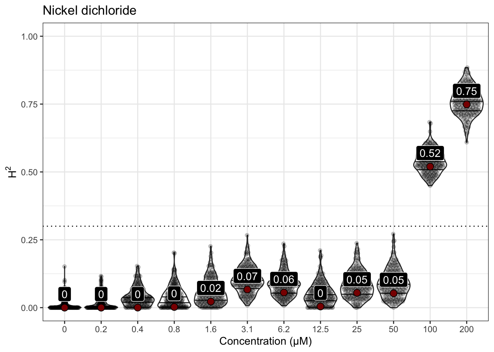
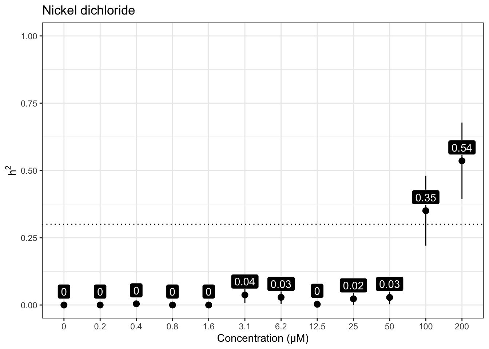
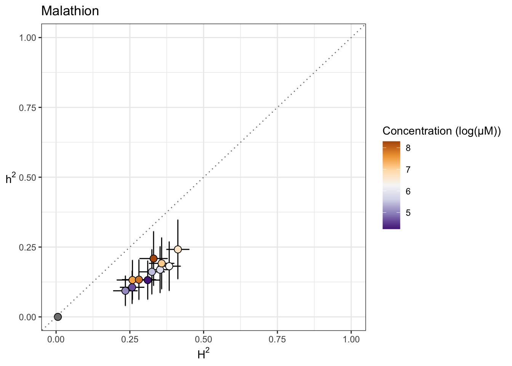
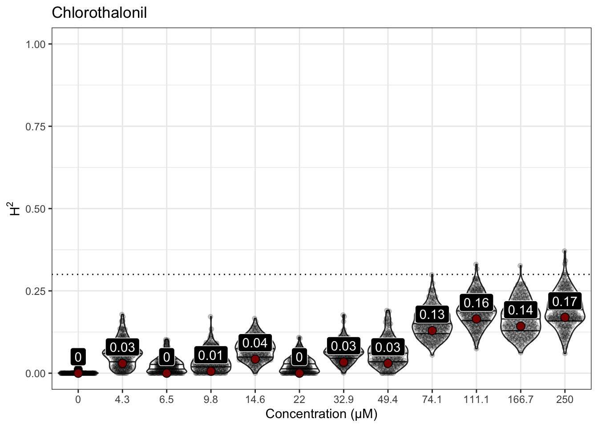

Heritability Analyses
Last updated: 2021-10-13
Checks: 6 1
Knit directory: toxin_dose_responses/
This reproducible R Markdown analysis was created with workflowr (version 1.6.2). The Checks tab describes the reproducibility checks that were applied when the results were created. The Past versions tab lists the development history.
Great! Since the R Markdown file has been committed to the Git repository, you know the exact version of the code that produced these results.
Great job! The global environment was empty. Objects defined in the global environment can affect the analysis in your R Markdown file in unknown ways. For reproduciblity it’s best to always run the code in an empty environment.
The command set.seed(20210305) was run prior to running the code in the R Markdown file. Setting a seed ensures that any results that rely on randomness, e.g. subsampling or permutations, are reproducible.
Great job! Recording the operating system, R version, and package versions is critical for reproducibility.
Nice! There were no cached chunks for this analysis, so you can be confident that you successfully produced the results during this run.
Using absolute paths to the files within your workflowr project makes it difficult for you and others to run your code on a different machine. Change the absolute path(s) below to the suggested relative path(s) to make your code more reproducible.
| absolute | relative |
|---|---|
| ~/Documents/projects/toxin_dose_responses/ | . |
Great! You are using Git for version control. Tracking code development and connecting the code version to the results is critical for reproducibility.
The results in this page were generated with repository version 2faffce. See the Past versions tab to see a history of the changes made to the R Markdown and HTML files.
Note that you need to be careful to ensure that all relevant files for the analysis have been committed to Git prior to generating the results (you can use wflow_publish or wflow_git_commit). workflowr only checks the R Markdown file, but you know if there are other scripts or data files that it depends on. Below is the status of the Git repository when the results were generated:
Ignored files:
Ignored: .DS_Store
Ignored: .Rhistory
Ignored: analysis/.DS_Store
Ignored: analysis/figure/
Ignored: output/.DS_Store
Untracked files:
Untracked: Manganese_diagnostic_2000_1366_1818.png
Untracked: Nickel_diagnostic_100_200.png
Untracked: Propoxur_diagnostic_195.09_987.65.png
Untracked: code/easyXpress.supplement.R
Untracked: code/makeDesign.R
Untracked: code/toxin.geno.matrix.sh
Untracked: data/drugclasses.csv
Untracked: data/h2doses.csv
Untracked: data/tx.doses.mappings.numbers
Untracked: output/2,4-DE10plot.png
Untracked: output/2,4-D_EC.plot.png
Untracked: output/2,4-D_EC10.csv
Untracked: output/2,4-D_EC50.csv
Untracked: output/2,4-D_EC90.csv
Untracked: output/2,4-D_EC90.plot.png
Untracked: output/2,4-D_GWA.DR.summary.png
Untracked: output/2,4-D_H2.rank.plot.png
Untracked: output/24-D.stocks.png
Untracked: output/3model.heatmap.png
Untracked: output/4model.heatmap.png
Untracked: output/AldicarbE10plot.png
Untracked: output/Aldicarb_EC.plot.png
Untracked: output/Aldicarb_EC10.csv
Untracked: output/Aldicarb_EC50.csv
Untracked: output/Aldicarb_EC90.csv
Untracked: output/Aldicarb_EC90.plot.png
Untracked: output/Aldicarb_GWA.DR.summary.png
Untracked: output/Aldicarb_H2.rank.plot.png
Untracked: output/Arsenic trioxideE10plot.png
Untracked: output/Arsenic trioxide_EC.plot.png
Untracked: output/Arsenic trioxide_EC10.csv
Untracked: output/Arsenic trioxide_EC90.plot.png
Untracked: output/Arsenic trioxide_H2.rank.plot.png
Untracked: output/Arsenic_trioxide_GWA.DR.summary.png
Untracked: output/AtrazineE10plot.png
Untracked: output/Atrazine_EC.plot.png
Untracked: output/Atrazine_EC10.csv
Untracked: output/Atrazine_EC50.csv
Untracked: output/Atrazine_EC90.plot.png
Untracked: output/Atrazine_GWA.DR.summary.png
Untracked: output/Atrazine_H2.rank.plot.png
Untracked: output/Atrazine_MDHD.junk.png
Untracked: output/Cadmium dichlorideE10plot.png
Untracked: output/Cadmium dichloride_EC.plot.png
Untracked: output/Cadmium dichloride_EC10.csv
Untracked: output/Cadmium dichloride_EC50.csv
Untracked: output/Cadmium dichloride_EC90.csv
Untracked: output/Cadmium dichloride_EC90.plot.png
Untracked: output/Cadmium dichloride_H2.rank.plot.png
Untracked: output/Cadmium dichloride_MDHD.junk.png
Untracked: output/Cadmium_dichloride_GWA.DR.summary.png
Untracked: output/CarbarylE10plot.png
Untracked: output/Carbaryl_EC.plot.png
Untracked: output/Carbaryl_EC10.csv
Untracked: output/Carbaryl_EC50.csv
Untracked: output/Carbaryl_EC90.csv
Untracked: output/Carbaryl_EC90.plot.png
Untracked: output/Carbaryl_GWA.DR.summary.png
Untracked: output/Carbaryl_H2.rank.plot.png
Untracked: output/CarboxinE10plot.png
Untracked: output/Carboxin_EC.plot.png
Untracked: output/Carboxin_EC10.csv
Untracked: output/Carboxin_EC50.csv
Untracked: output/Carboxin_EC90.csv
Untracked: output/Carboxin_EC90.plot.png
Untracked: output/Carboxin_GWA.DR.summary.png
Untracked: output/Carboxin_H2.rank.plot.png
Untracked: output/ChlorfenapyrE10plot.png
Untracked: output/Chlorfenapyr_EC.plot.png
Untracked: output/Chlorfenapyr_EC10.csv
Untracked: output/Chlorfenapyr_EC50.csv
Untracked: output/Chlorfenapyr_EC90.csv
Untracked: output/Chlorfenapyr_EC90.plot.png
Untracked: output/Chlorfenapyr_GWA.DR.summary.png
Untracked: output/Chlorfenapyr_H2.rank.plot.png
Untracked: output/ChlorothalonilE10plot.png
Untracked: output/Chlorothalonil_EC.plot.png
Untracked: output/Chlorothalonil_EC10.csv
Untracked: output/Chlorothalonil_EC50.csv
Untracked: output/Chlorothalonil_EC90.csv
Untracked: output/Chlorothalonil_EC90.plot.png
Untracked: output/Chlorothalonil_GWA.DR.summary.png
Untracked: output/Chlorothalonil_H2.rank.plot.png
Untracked: output/ChlorpyrifosE10plot.png
Untracked: output/Chlorpyrifos_EC.plot.png
Untracked: output/Chlorpyrifos_EC10.csv
Untracked: output/Chlorpyrifos_EC50.csv
Untracked: output/Chlorpyrifos_EC90.csv
Untracked: output/Chlorpyrifos_EC90.plot.png
Untracked: output/Chlorpyrifos_GWA.DR.summary.png
Untracked: output/Chlorpyrifos_H2.rank.plot.png
Untracked: output/Copper(II) chlorideE10plot.png
Untracked: output/Copper(II) chloride_EC.plot.png
Untracked: output/Copper(II) chloride_EC10.csv
Untracked: output/Copper(II) chloride_EC50.csv
Untracked: output/Copper(II) chloride_EC90.csv
Untracked: output/Copper(II) chloride_EC90.plot.png
Untracked: output/Copper(II) chloride_H2.rank.plot.png
Untracked: output/Copper(II)_chloride_GWA.DR.summary.png
Untracked: output/Deltamethrin_EC.plot.png
Untracked: output/Deltamethrin_EC10.csv
Untracked: output/Deltamethrin_EC50.csv
Untracked: output/Deltamethrin_EC90.csv
Untracked: output/Deltamethrin_EC90.plot.png
Untracked: output/Deltamethrin_H2.rank.plot.png
Untracked: output/EC10.strain.comp.Carbamate Insecticide.png
Untracked: output/EC10.strain.comp.Flame Retardant.png
Untracked: output/EC10.strain.comp.Fungicide.png
Untracked: output/EC10.strain.comp.Heavy Metal.png
Untracked: output/EC10.strain.comp.Herbicide.png
Untracked: output/EC10.strain.comp.Organophosphate insecticide.png
Untracked: output/EC10.strain.comp.Pro-insecticide.png
Untracked: output/EC10.strain.comp.Synthetic Pyrethroid Insecticide.png
Untracked: output/EC10.strain.comp.png
Untracked: output/EC10.survey.png
Untracked: output/EC90.strain.comp.Carbamate Insecticide.png
Untracked: output/EC90.strain.comp.Flame Retardant.png
Untracked: output/EC90.strain.comp.Fungicide.png
Untracked: output/EC90.strain.comp.Heavy Metal.png
Untracked: output/EC90.strain.comp.Herbicide.png
Untracked: output/EC90.strain.comp.Organophosphate insecticide.png
Untracked: output/EC90.strain.comp.Pro-insecticide.png
Untracked: output/EC90.strain.comp.Synthetic Pyrethroid Insecticide.png
Untracked: output/H2.plot.20210306.png
Untracked: output/H2.plot.20210308.png
Untracked: output/H2.plot.20210314.png
Untracked: output/JAX.as.dose.check.plot.png
Untracked: output/Lead(II) nitrateE10plot.png
Untracked: output/Lead(II) nitrate_EC.plot.png
Untracked: output/Lead(II) nitrate_EC10.csv
Untracked: output/Lead(II) nitrate_EC90.plot.png
Untracked: output/Lead(II) nitrate_H2.rank.plot.png
Untracked: output/Lead(II)_nitrate_GWA.DR.summary.png
Untracked: output/MalathionE10plot.png
Untracked: output/Malathion_EC.plot.png
Untracked: output/Malathion_EC10.csv
Untracked: output/Malathion_EC50.csv
Untracked: output/Malathion_EC90.csv
Untracked: output/Malathion_EC90.plot.png
Untracked: output/Malathion_GWA.DR.summary.png
Untracked: output/Malathion_H2.rank.plot.png
Untracked: output/MancozebE10plot.png
Untracked: output/Mancozeb_EC.plot.png
Untracked: output/Mancozeb_EC10.csv
Untracked: output/Mancozeb_EC50.csv
Untracked: output/Mancozeb_EC90.csv
Untracked: output/Mancozeb_EC90.plot.png
Untracked: output/Mancozeb_GWA.DR.summary.png
Untracked: output/Mancozeb_H2.rank.plot.png
Untracked: output/Manganese dichlorideE10plot.png
Untracked: output/Manganese dichloride_EC.plot.png
Untracked: output/Manganese dichloride_EC10.csv
Untracked: output/Manganese dichloride_EC50.csv
Untracked: output/Manganese dichloride_EC90.csv
Untracked: output/Manganese dichloride_EC90.plot.png
Untracked: output/Manganese dichloride_H2.rank.plot.png
Untracked: output/MethomylE10plot.png
Untracked: output/Methomyl_EC.plot.png
Untracked: output/Methomyl_EC10.csv
Untracked: output/Methomyl_EC50.csv
Untracked: output/Methomyl_EC90.csv
Untracked: output/Methomyl_EC90.plot.png
Untracked: output/Methomyl_GWA.DR.summary.png
Untracked: output/Methomyl_H2.rank.plot.png
Untracked: output/Methylmercury dichlorideE10plot.png
Untracked: output/Methylmercury dichloride_EC.plot.png
Untracked: output/Methylmercury dichloride_EC10.csv
Untracked: output/Methylmercury dichloride_EC50.csv
Untracked: output/Methylmercury dichloride_EC90.csv
Untracked: output/Methylmercury dichloride_EC90.plot.png
Untracked: output/Methylmercury dichloride_H2.rank.plot.png
Untracked: output/Methylmercury_dichloride_GWA.DR.summary.png
Untracked: output/Nickel dichlorideE10plot.png
Untracked: output/Nickel dichloride_EC.plot.png
Untracked: output/Nickel dichloride_EC10.csv
Untracked: output/Nickel dichloride_EC50.csv
Untracked: output/Nickel dichloride_EC90.csv
Untracked: output/Nickel dichloride_EC90.plot.png
Untracked: output/Nickel dichloride_H2.rank.plot.png
Untracked: output/Nickel_dichloride_GWA.DR.summary.png
Untracked: output/ParaquatE10plot.png
Untracked: output/Paraquat_EC.plot.png
Untracked: output/Paraquat_EC10.csv
Untracked: output/Paraquat_EC50.csv
Untracked: output/Paraquat_EC90.csv
Untracked: output/Paraquat_EC90.plot.png
Untracked: output/Paraquat_GWA.DR.summary.png
Untracked: output/Paraquat_H2.rank.plot.png
Untracked: output/PropoxurE10plot.png
Untracked: output/Propoxur_EC.plot.png
Untracked: output/Propoxur_EC10.csv
Untracked: output/Propoxur_EC50.csv
Untracked: output/Propoxur_EC90.csv
Untracked: output/Propoxur_EC90.plot.png
Untracked: output/Propoxur_GWA.DR.summary.png
Untracked: output/Propoxur_H2.rank.plot.png
Untracked: output/PyraclostrobinE10plot.png
Untracked: output/Pyraclostrobin_EC.plot.png
Untracked: output/Pyraclostrobin_EC10.csv
Untracked: output/Pyraclostrobin_EC50.csv
Untracked: output/Pyraclostrobin_EC90.csv
Untracked: output/Pyraclostrobin_EC90.plot.png
Untracked: output/Pyraclostrobin_GWA.DR.summary.png
Untracked: output/Pyraclostrobin_H2.rank.plot.png
Untracked: output/Pyraclostrobin_MDHD.junk.png
Untracked: output/Silver nitrateE10plot.png
Untracked: output/Silver nitrate_EC.plot.png
Untracked: output/Silver nitrate_EC10.csv
Untracked: output/Silver nitrate_EC50.csv
Untracked: output/Silver nitrate_EC90.csv
Untracked: output/Silver nitrate_EC90.plot.png
Untracked: output/Silver nitrate_H2.rank.plot.png
Untracked: output/Silver_nitrate_GWA.DR.summary.png
Untracked: output/Triphenyl phosphateE10plot.png
Untracked: output/Triphenyl phosphate_EC.plot.png
Untracked: output/Triphenyl phosphate_EC10.csv
Untracked: output/Triphenyl phosphate_EC50.csv
Untracked: output/Triphenyl phosphate_EC90.csv
Untracked: output/Triphenyl phosphate_EC90.plot.png
Untracked: output/Triphenyl phosphate_H2.rank.plot.png
Untracked: output/Triphenyl phosphate_MDHD.junk.png
Untracked: output/Triphenyl_phosphate_GWA.DR.summary.png
Untracked: output/Zinc dichlorideE10plot.png
Untracked: output/Zinc dichloride_EC.plot.png
Untracked: output/Zinc dichloride_EC10.csv
Untracked: output/Zinc dichloride_EC50.csv
Untracked: output/Zinc dichloride_EC90.csv
Untracked: output/Zinc dichloride_EC90.plot.png
Untracked: output/Zinc dichloride_H2.rank.plot.png
Untracked: output/Zinc_dichloride_GWA.DR.summary.png
Untracked: output/aldicarb.stocks.png
Untracked: output/big.herit.plot.png
Untracked: output/big.tox.plot.png
Untracked: output/bigDRC.grid.png
Untracked: output/carb.DRCs.png
Untracked: output/cv.control.wells.csv
Untracked: output/easyXpress.supp.png
Untracked: output/fungi.DRCs.png
Untracked: output/herb.DRCs.png
Untracked: output/manganese_toxin23_p57.png
Untracked: output/metal.DRCs.png
Untracked: output/organophosphate.DRCs.png
Untracked: output/rank.plots.zip
Untracked: output/silver.nitrate.stocks.png
Untracked: output/toxicants.8strains.EC90.csv
Untracked: output/toxicants.8strains.csv
Unstaged changes:
Modified: analysis/toxin8strains.Rmd
Note that any generated files, e.g. HTML, png, CSS, etc., are not included in this status report because it is ok for generated content to have uncommitted changes.
These are the previous versions of the repository in which changes were made to the R Markdown (analysis/heritability.Rmd) and HTML (docs/heritability.html) files. If you’ve configured a remote Git repository (see ?wflow_git_remote), click on the hyperlinks in the table below to view the files as they were in that past version.
| File | Version | Author | Date | Message |
|---|---|---|---|---|
| Rmd | 2faffce | sam-widmayer | 2021-10-13 | round dose estimate for plotting |
| html | f5b23be | sam-widmayer | 2021-10-13 | Build site. |
| Rmd | c945690 | sam-widmayer | 2021-10-13 | use mean wormlength in plotting |
| Rmd | fe4c3b3 | sam-widmayer | 2021-10-13 | fix bad chunk label |
| Rmd | ae8b068 | sam-widmayer | 2021-10-13 | save GWA.DR summary plots |
| Rmd | e866a5a | sam-widmayer | 2021-10-13 | updated plotting |
| html | bb5ae40 | sam-widmayer | 2021-07-06 | Build site. |
| Rmd | a8bab7a | sam-widmayer | 2021-07-06 | toxin28 updates |
| html | a8afd8b | sam-widmayer | 2021-06-01 | Build site. |
| Rmd | aa19e8e | sam-widmayer | 2021-06-01 | NIEHS meeting updates |
| Rmd | 45e214b | sam-widmayer | 2021-05-13 | may trip push |
| html | c73a965 | sam-widmayer | 2021-05-05 | Build site. |
| Rmd | 9be65ec | sam-widmayer | 2021-05-05 | normalized rank comparisons for top heritable doses |
| html | 7f8f7f0 | sam-widmayer | 2021-05-04 | Build site. |
| Rmd | 65feca2 | sam-widmayer | 2021-05-04 | minimalist dose response plots |
| html | 8529055 | sam-widmayer | 2021-04-19 | Build site. |
| Rmd | 26547e8 | sam-widmayer | 2021-04-19 | integrate toxin27A |
| html | bc5c5b5 | sam-widmayer | 2021-04-09 | Build site. |
| Rmd | 5cdca37 | sam-widmayer | 2021-04-09 | toxin26A and tx group analyses |
| html | 19f2802 | sam-widmayer | 2021-03-29 | Build site. |
| Rmd | ecf1af1 | sam-widmayer | 2021-03-29 | integrate toxin24A |
| html | a41a855 | sam-widmayer | 2021-03-25 | Build site. |
| Rmd | a6438e9 | sam-widmayer | 2021-03-25 | fix bootstrap bug |
| html | 0280cf4 | sam-widmayer | 2021-03-24 | Build site. |
| Rmd | 8ba0e4b | sam-widmayer | 2021-03-24 | read in geno matrix |
| Rmd | cdb9d3e | sam-widmayer | 2021-03-24 | narrow sense herits and plotting |
| html | 0e83f2b | sam-widmayer | 2021-03-24 | Build site. |
| Rmd | 75da486 | sam-widmayer | 2021-03-24 | progress meeting updates |
| Rmd | 7d105e2 | sam-widmayer | 2021-03-24 | progress meeting updates |
| html | a451b2a | sam-widmayer | 2021-03-17 | Build site. |
| Rmd | 5d61c5a | sam-widmayer | 2021-03-17 | fix NA bug H2.plot |
| Rmd | 576f962 | sam-widmayer | 2021-03-17 | show H2 bootstrap distributions |
| html | 4bcbcdd | sam-widmayer | 2021-03-14 | Build site. |
| Rmd | bdfa65f | sam-widmayer | 2021-03-14 | integrate toxin22 results |
| html | 212e0ae | sam-widmayer | 2021-03-08 | Build site. |
| html | cb6e132 | sam-widmayer | 2021-03-06 | Build site. |
| Rmd | 46c9647 | sam-widmayer | 2021-03-06 | static working directory |
| Rmd | 41bdaa0 | sam-widmayer | 2021-03-05 | dynamic working directory |
| Rmd | 0c9d312 | sam-widmayer | 2021-03-05 | initiate toxin DRC analysis repo |
Silver nitrate
Version out of date. Please update sommer to the newest version using:
install.packages('sommer') in a new session
Use the 'date.warning' argument to disable the warning message.iteration LogLik wall cpu(sec) restrained
1 -175.897 9:29:16 1 0
2 -173.437 9:29:16 1 0
3 -169.166 9:29:16 1 1
4 -166 9:29:16 1 1
5 -166 9:29:16 1 1
Version out of date. Please update sommer to the newest version using:
install.packages('sommer') in a new session
Use the 'date.warning' argument to disable the warning message.iteration LogLik wall cpu(sec) restrained
1 -169.91 9:29:23 0 0
2 -167.936 9:29:23 0 0
3 -165.469 9:29:23 0 0
4 -164.49 9:29:23 0 0
5 -164.485 9:29:23 0 0
6 -164.484 9:29:23 0 0
Version out of date. Please update sommer to the newest version using:
install.packages('sommer') in a new session
Use the 'date.warning' argument to disable the warning message.iteration LogLik wall cpu(sec) restrained
1 -171.852 9:29:30 0 0
2 -170.365 9:29:30 0 0
3 -168.922 9:29:30 0 0
4 -168.442 9:29:31 1 0
5 -168.425 9:29:31 1 0
6 -168.424 9:29:31 1 0
Version out of date. Please update sommer to the newest version using:
install.packages('sommer') in a new session
Use the 'date.warning' argument to disable the warning message.iteration LogLik wall cpu(sec) restrained
1 -168.885 9:29:37 0 0
2 -167.715 9:29:38 1 0
3 -166.8 9:29:38 1 0
4 -166.608 9:29:38 1 0
5 -166.607 9:29:38 1 0
6 -166.607 9:29:38 1 0
Version out of date. Please update sommer to the newest version using:
install.packages('sommer') in a new session
Use the 'date.warning' argument to disable the warning message.iteration LogLik wall cpu(sec) restrained
1 -167.166 9:29:45 0 0
2 -166.155 9:29:45 0 0
3 -165.34 9:29:45 0 0
4 -165.092 9:29:45 0 0
5 -165.078 9:29:45 0 0
6 -165.078 9:29:45 0 0
Version out of date. Please update sommer to the newest version using:
install.packages('sommer') in a new session
Use the 'date.warning' argument to disable the warning message.iteration LogLik wall cpu(sec) restrained
1 -153.096 9:29:52 0 0
2 -152.689 9:29:52 0 0
3 -152.485 9:29:52 0 0
4 -152.456 9:29:52 0 0
5 -152.456 9:29:52 0 0
Version out of date. Please update sommer to the newest version using:
install.packages('sommer') in a new session
Use the 'date.warning' argument to disable the warning message.iteration LogLik wall cpu(sec) restrained
1 -123.312 9:29:59 0 0
2 -123.14 9:29:59 0 0
3 -123.097 9:29:59 0 0
4 -123.093 9:29:59 0 0
5 -123.093 9:29:59 0 0
Version out of date. Please update sommer to the newest version using:
install.packages('sommer') in a new session
Use the 'date.warning' argument to disable the warning message.iteration LogLik wall cpu(sec) restrained
1 -116.408 9:30:6 0 0
2 -115.663 9:30:6 0 0
3 -115.52 9:30:6 0 0
4 -115.508 9:30:6 0 0
5 -115.508 9:30:7 1 0
Version out of date. Please update sommer to the newest version using:
install.packages('sommer') in a new session
Use the 'date.warning' argument to disable the warning message.iteration LogLik wall cpu(sec) restrained
1 -124.949 9:30:13 0 0
2 -124.768 9:30:13 0 0
3 -124.723 9:30:13 0 0
4 -124.719 9:30:13 0 0
5 -124.719 9:30:13 0 0
Version out of date. Please update sommer to the newest version using:
install.packages('sommer') in a new session
Use the 'date.warning' argument to disable the warning message.iteration LogLik wall cpu(sec) restrained
1 -128.114 9:30:20 0 0
2 -127.923 9:30:20 0 0
3 -127.875 9:30:20 0 0
4 -127.871 9:30:20 0 0
5 -127.87 9:30:21 1 0
Version out of date. Please update sommer to the newest version using:
install.packages('sommer') in a new session
Use the 'date.warning' argument to disable the warning message.iteration LogLik wall cpu(sec) restrained
1 -145.986 9:30:27 0 0
2 -145.729 9:30:27 0 0
3 -145.596 9:30:27 0 0
4 -145.57 9:30:27 0 0
5 -145.569 9:30:27 0 0
6 -145.569 9:30:28 1 0
Version out of date. Please update sommer to the newest version using:
install.packages('sommer') in a new session
Use the 'date.warning' argument to disable the warning message.iteration LogLik wall cpu(sec) restrained
1 -65.7675 9:30:34 0 0
2 -63.6219 9:30:34 0 0
3 -63.2962 9:30:34 0 0
4 -63.2716 9:30:34 0 0
5 -63.2713 9:30:35 1 0
| Version | Author | Date |
|---|---|---|
| bb5ae40 | sam-widmayer | 2021-07-06 |
| a8afd8b | sam-widmayer | 2021-06-01 |
| 8529055 | sam-widmayer | 2021-04-19 |
| bc5c5b5 | sam-widmayer | 2021-04-09 |
| 19f2802 | sam-widmayer | 2021-03-29 |
| a41a855 | sam-widmayer | 2021-03-25 |
| 0280cf4 | sam-widmayer | 2021-03-24 |
| 0e83f2b | sam-widmayer | 2021-03-24 |
| a451b2a | sam-widmayer | 2021-03-17 |
| 4bcbcdd | sam-widmayer | 2021-03-14 |
| cb6e132 | sam-widmayer | 2021-03-06 |


Cadmium dichloride
Version out of date. Please update sommer to the newest version using:
install.packages('sommer') in a new session
Use the 'date.warning' argument to disable the warning message.iteration LogLik wall cpu(sec) restrained
1 -147.324 9:30:45 0 0
2 -144.857 9:30:45 0 0
3 -140.573 9:30:45 0 1
4 -138 9:30:45 0 1
5 -138 9:30:45 0 1
Version out of date. Please update sommer to the newest version using:
install.packages('sommer') in a new session
Use the 'date.warning' argument to disable the warning message.iteration LogLik wall cpu(sec) restrained
1 -138.951 9:30:52 0 0
2 -137.447 9:30:52 0 0
3 -135.872 9:30:52 0 0
4 -135.091 9:30:52 0 0
5 -134.985 9:30:52 0 0
6 -134.973 9:30:52 0 0
7 -134.972 9:30:52 0 0
8 -134.972 9:30:52 0 0
Version out of date. Please update sommer to the newest version using:
install.packages('sommer') in a new session
Use the 'date.warning' argument to disable the warning message.iteration LogLik wall cpu(sec) restrained
1 -141.766 9:30:59 0 0
2 -139.776 9:30:59 0 0
3 -137.135 9:30:59 0 0
4 -135.838 9:30:59 0 0
5 -135.788 9:30:59 0 0
6 -135.769 9:30:59 0 0
7 -135.761 9:30:59 0 0
8 -135.758 9:30:59 0 0
9 -135.756 9:30:59 0 0
10 -135.756 9:30:59 0 0
Version out of date. Please update sommer to the newest version using:
install.packages('sommer') in a new session
Use the 'date.warning' argument to disable the warning message.iteration LogLik wall cpu(sec) restrained
1 -140.192 9:31:6 0 0
2 -138.894 9:31:6 0 0
3 -137.662 9:31:6 0 0
4 -137.144 9:31:6 0 0
5 -137.09 9:31:6 0 0
6 -137.085 9:31:6 0 0
7 -137.085 9:31:6 0 0
Version out of date. Please update sommer to the newest version using:
install.packages('sommer') in a new session
Use the 'date.warning' argument to disable the warning message.iteration LogLik wall cpu(sec) restrained
1 -140.105 9:31:13 0 0
2 -138.513 9:31:13 0 0
3 -136.871 9:31:13 0 0
4 -136.289 9:31:13 0 0
5 -136.282 9:31:13 0 0
6 -136.282 9:31:13 0 0
Version out of date. Please update sommer to the newest version using:
install.packages('sommer') in a new session
Use the 'date.warning' argument to disable the warning message.iteration LogLik wall cpu(sec) restrained
1 -143.401 9:31:20 0 0
2 -141.48 9:31:20 0 0
3 -139.176 9:31:20 0 0
4 -138.55 9:31:20 0 0
5 -138.502 9:31:20 0 0
6 -138.49 9:31:20 0 0
7 -138.488 9:31:20 0 0
8 -138.488 9:31:21 1 0
Version out of date. Please update sommer to the newest version using:
install.packages('sommer') in a new session
Use the 'date.warning' argument to disable the warning message.iteration LogLik wall cpu(sec) restrained
1 -135.509 9:31:27 0 0
2 -134.496 9:31:27 0 0
3 -133.748 9:31:27 0 0
4 -133.586 9:31:28 1 0
5 -133.583 9:31:28 1 0
6 -133.583 9:31:28 1 0
Version out of date. Please update sommer to the newest version using:
install.packages('sommer') in a new session
Use the 'date.warning' argument to disable the warning message.iteration LogLik wall cpu(sec) restrained
1 -140.073 9:31:34 0 0
2 -138.164 9:31:34 0 0
3 -135.931 9:31:34 0 0
4 -135.383 9:31:34 0 0
5 -135.341 9:31:34 0 0
6 -135.333 9:31:35 1 0
7 -135.332 9:31:35 1 0
8 -135.332 9:31:35 1 0
Version out of date. Please update sommer to the newest version using:
install.packages('sommer') in a new session
Use the 'date.warning' argument to disable the warning message.iteration LogLik wall cpu(sec) restrained
1 -97.7263 9:31:41 0 0
2 -97.6384 9:31:41 0 0
3 -97.605 9:31:41 0 0
4 -97.6012 9:31:41 0 0
5 -97.6011 9:31:41 0 0
Version out of date. Please update sommer to the newest version using:
install.packages('sommer') in a new session
Use the 'date.warning' argument to disable the warning message.iteration LogLik wall cpu(sec) restrained
1 -79.9548 9:31:48 0 0
2 -79.1662 9:31:48 0 0
3 -78.9779 9:31:48 0 0
4 -78.9577 9:31:48 0 0
5 -78.9572 9:31:49 1 0
Version out of date. Please update sommer to the newest version using:
install.packages('sommer') in a new session
Use the 'date.warning' argument to disable the warning message.iteration LogLik wall cpu(sec) restrained
1 -139.538 9:31:55 0 0
2 -137.646 9:31:55 0 0
3 -135.329 9:31:55 0 0
4 -134.331 9:31:55 0 0
5 -134.326 9:31:55 0 0
6 -134.326 9:31:56 1 0
Version out of date. Please update sommer to the newest version using:
install.packages('sommer') in a new session
Use the 'date.warning' argument to disable the warning message.iteration LogLik wall cpu(sec) restrained
1 -139.836 9:32:2 0 0
2 -138.024 9:32:2 0 0
3 -135.969 9:32:2 0 0
4 -135.355 9:32:2 0 0
5 -135.343 9:32:2 0 0
6 -135.341 9:32:3 1 0
7 -135.341 9:32:3 1 0
| Version | Author | Date |
|---|---|---|
| f5b23be | sam-widmayer | 2021-10-13 |
| bb5ae40 | sam-widmayer | 2021-07-06 |
| a8afd8b | sam-widmayer | 2021-06-01 |
| 8529055 | sam-widmayer | 2021-04-19 |
| bc5c5b5 | sam-widmayer | 2021-04-09 |
| 19f2802 | sam-widmayer | 2021-03-29 |
| a41a855 | sam-widmayer | 2021-03-25 |
| 0280cf4 | sam-widmayer | 2021-03-24 |
| 0e83f2b | sam-widmayer | 2021-03-24 |
| a451b2a | sam-widmayer | 2021-03-17 |
| 4bcbcdd | sam-widmayer | 2021-03-14 |
| cb6e132 | sam-widmayer | 2021-03-06 |


Copper (II) dichloride
Version out of date. Please update sommer to the newest version using:
install.packages('sommer') in a new session
Use the 'date.warning' argument to disable the warning message.iteration LogLik wall cpu(sec) restrained
1 -80.0137 9:32:12 0 0
2 -78.873 9:32:12 0 0
3 -78.1201 9:32:12 0 0
4 -78.0629 9:32:12 0 0
5 -78.0607 9:32:12 0 0
6 -78.0606 9:32:12 0 0
Version out of date. Please update sommer to the newest version using:
install.packages('sommer') in a new session
Use the 'date.warning' argument to disable the warning message.iteration LogLik wall cpu(sec) restrained
1 -125.053 9:32:19 0 0
2 -123.891 9:32:19 0 0
3 -122.974 9:32:19 0 0
4 -122.786 9:32:19 0 0
5 -122.785 9:32:19 0 0
Version out of date. Please update sommer to the newest version using:
install.packages('sommer') in a new session
Use the 'date.warning' argument to disable the warning message.iteration LogLik wall cpu(sec) restrained
1 -129.499 9:32:26 0 0
2 -128.209 9:32:26 0 0
3 -127.047 9:32:26 0 0
4 -126.685 9:32:26 0 0
5 -126.677 9:32:26 0 0
6 -126.677 9:32:26 0 0
Version out of date. Please update sommer to the newest version using:
install.packages('sommer') in a new session
Use the 'date.warning' argument to disable the warning message.iteration LogLik wall cpu(sec) restrained
1 -126.538 9:32:33 0 0
2 -125.409 9:32:33 0 0
3 -124.56 9:32:33 0 0
4 -124.403 9:32:33 0 0
5 -124.402 9:32:33 0 0
Version out of date. Please update sommer to the newest version using:
install.packages('sommer') in a new session
Use the 'date.warning' argument to disable the warning message.iteration LogLik wall cpu(sec) restrained
1 -120.42 9:32:40 0 0
2 -119.955 9:32:40 0 0
3 -119.719 9:32:40 0 0
4 -119.687 9:32:40 0 0
5 -119.687 9:32:40 0 0
Version out of date. Please update sommer to the newest version using:
install.packages('sommer') in a new session
Use the 'date.warning' argument to disable the warning message.iteration LogLik wall cpu(sec) restrained
1 -117.229 9:32:47 0 0
2 -116.794 9:32:47 0 0
3 -116.567 9:32:47 0 0
4 -116.532 9:32:47 0 0
5 -116.532 9:32:47 0 0
Version out of date. Please update sommer to the newest version using:
install.packages('sommer') in a new session
Use the 'date.warning' argument to disable the warning message.iteration LogLik wall cpu(sec) restrained
1 -43.2017 9:32:53 0 0
2 -43.1799 9:32:53 0 0
3 -43.1711 9:32:53 0 0
4 -43.1694 9:32:53 0 0
5 -43.1693 9:32:53 0 0
[1] "Only 1 Strain Sampled in Bootstrap - Skipping"
[1] "Only 1 Strain Sampled in Bootstrap - Skipping"
Version out of date. Please update sommer to the newest version using:
install.packages('sommer') in a new session
Use the 'date.warning' argument to disable the warning message.iteration LogLik wall cpu(sec) restrained
1 -124.735 9:33:0 0 0
2 -123.689 9:33:0 0 0
3 -122.895 9:33:0 0 0
4 -122.721 9:33:0 0 0
5 -122.72 9:33:0 0 0
6 -122.72 9:33:0 0 0
Version out of date. Please update sommer to the newest version using:
install.packages('sommer') in a new session
Use the 'date.warning' argument to disable the warning message.iteration LogLik wall cpu(sec) restrained
1 -121.197 9:33:7 0 0
2 -120.203 9:33:7 0 0
3 -119.467 9:33:7 0 0
4 -119.305 9:33:7 0 0
5 -119.302 9:33:7 0 0
6 -119.302 9:33:7 0 0
Version out of date. Please update sommer to the newest version using:
install.packages('sommer') in a new session
Use the 'date.warning' argument to disable the warning message.iteration LogLik wall cpu(sec) restrained
1 -129.631 9:33:14 0 0
2 -128.197 9:33:14 0 0
3 -126.913 9:33:14 0 0
4 -126.64 9:33:14 0 0
5 -126.64 9:33:14 0 0
Version out of date. Please update sommer to the newest version using:
install.packages('sommer') in a new session
Use the 'date.warning' argument to disable the warning message.iteration LogLik wall cpu(sec) restrained
1 -139.126 9:33:21 0 0
2 -136.656 9:33:21 0 0
3 -132.367 9:33:21 0 1
4 -130 9:33:21 0 1
5 -130 9:33:21 0 1
Version out of date. Please update sommer to the newest version using:
install.packages('sommer') in a new session
Use the 'date.warning' argument to disable the warning message.iteration LogLik wall cpu(sec) restrained
1 -127.368 9:33:28 0 0
2 -125.899 9:33:28 0 0
3 -124.618 9:33:28 0 0
4 -124.422 9:33:28 0 0
5 -124.417 9:33:28 0 0
6 -124.417 9:33:28 0 0
| Version | Author | Date |
|---|---|---|
| f5b23be | sam-widmayer | 2021-10-13 |
| bb5ae40 | sam-widmayer | 2021-07-06 |
| a8afd8b | sam-widmayer | 2021-06-01 |
| 8529055 | sam-widmayer | 2021-04-19 |
| bc5c5b5 | sam-widmayer | 2021-04-09 |
| 19f2802 | sam-widmayer | 2021-03-29 |
| a41a855 | sam-widmayer | 2021-03-25 |
| 0280cf4 | sam-widmayer | 2021-03-24 |
| 0e83f2b | sam-widmayer | 2021-03-24 |
| a451b2a | sam-widmayer | 2021-03-17 |
| 4bcbcdd | sam-widmayer | 2021-03-14 |
| cb6e132 | sam-widmayer | 2021-03-06 |


Nickel dichloride
Version out of date. Please update sommer to the newest version using:
install.packages('sommer') in a new session
Use the 'date.warning' argument to disable the warning message.iteration LogLik wall cpu(sec) restrained
1 -104.688 9:33:38 0 0
2 -102.204 9:33:38 0 0
3 -97.8879 9:33:38 0 1
4 -96.5 9:33:38 0 1
5 -96.5 9:33:38 0 1
Version out of date. Please update sommer to the newest version using:
install.packages('sommer') in a new session
Use the 'date.warning' argument to disable the warning message.iteration LogLik wall cpu(sec) restrained
1 -106.844 9:33:45 0 0
2 -104.51 9:33:45 0 0
3 -100.924 9:33:45 0 1
4 -99.5 9:33:45 0 1
5 -99.5 9:33:45 0 1
Version out of date. Please update sommer to the newest version using:
install.packages('sommer') in a new session
Use the 'date.warning' argument to disable the warning message.iteration LogLik wall cpu(sec) restrained
1 -108.535 9:33:52 0 0
2 -106.537 9:33:52 0 0
3 -104.008 9:33:52 0 0
4 -103.453 9:33:52 0 0
5 -103.297 9:33:52 0 0
6 -103.248 9:33:52 0 0
7 -103.224 9:33:52 0 0
8 -103.214 9:33:52 0 0
9 -103.21 9:33:52 0 0
10 -103.208 9:33:52 0 0
11 -103.207 9:33:52 0 0
Version out of date. Please update sommer to the newest version using:
install.packages('sommer') in a new session
Use the 'date.warning' argument to disable the warning message.iteration LogLik wall cpu(sec) restrained
1 -107.661 9:33:58 0 0
2 -106.024 9:33:58 0 0
3 -104.151 9:33:58 0 0
4 -102.88 9:33:58 0 1
5 -102.5 9:33:58 0 1
6 -102.5 9:33:58 0 1
Version out of date. Please update sommer to the newest version using:
install.packages('sommer') in a new session
Use the 'date.warning' argument to disable the warning message.iteration LogLik wall cpu(sec) restrained
1 -104.684 9:34:5 0 0
2 -103.497 9:34:5 0 0
3 -102.315 9:34:5 0 0
4 -101.576 9:34:5 0 0
5 -101.289 9:34:5 0 0
6 -101.139 9:34:5 0 0
7 -101.042 9:34:5 0 1
8 -101 9:34:5 0 1
9 -101 9:34:5 0 1
Version out of date. Please update sommer to the newest version using:
install.packages('sommer') in a new session
Use the 'date.warning' argument to disable the warning message.iteration LogLik wall cpu(sec) restrained
1 -102.987 9:34:12 0 0
2 -102.236 9:34:12 0 0
3 -101.659 9:34:12 0 0
4 -101.442 9:34:12 0 0
5 -101.41 9:34:12 0 0
6 -101.404 9:34:12 0 0
7 -101.404 9:34:12 0 0
Version out of date. Please update sommer to the newest version using:
install.packages('sommer') in a new session
Use the 'date.warning' argument to disable the warning message.iteration LogLik wall cpu(sec) restrained
1 -102.458 9:34:19 0 0
2 -101.261 9:34:19 0 0
3 -100.293 9:34:19 0 0
4 -100.062 9:34:19 0 0
5 -100.058 9:34:19 0 0
6 -100.058 9:34:19 0 0
Version out of date. Please update sommer to the newest version using:
install.packages('sommer') in a new session
Use the 'date.warning' argument to disable the warning message.iteration LogLik wall cpu(sec) restrained
1 -98.5748 9:34:26 0 0
2 -96.7764 9:34:26 0 0
3 -94.7545 9:34:26 0 0
4 -93.9631 9:34:26 0 0
5 -93.9519 9:34:26 0 0
6 -93.9518 9:34:26 0 0
Version out of date. Please update sommer to the newest version using:
install.packages('sommer') in a new session
Use the 'date.warning' argument to disable the warning message.iteration LogLik wall cpu(sec) restrained
1 -98.3541 9:34:32 0 0
2 -97.2899 9:34:32 0 0
3 -96.3691 9:34:32 0 0
4 -96.016 9:34:32 0 0
5 -95.9813 9:34:32 0 0
6 -95.9785 9:34:32 0 0
7 -95.9783 9:34:32 0 0
Version out of date. Please update sommer to the newest version using:
install.packages('sommer') in a new session
Use the 'date.warning' argument to disable the warning message.iteration LogLik wall cpu(sec) restrained
1 -97.3852 9:34:39 0 0
2 -96.2312 9:34:39 0 0
3 -95.3129 9:34:39 0 0
4 -95.0812 9:34:39 0 0
5 -95.0737 9:34:39 0 0
6 -95.0734 9:34:39 0 0
Version out of date. Please update sommer to the newest version using:
install.packages('sommer') in a new session
Use the 'date.warning' argument to disable the warning message.iteration LogLik wall cpu(sec) restrained
1 -44.7769 9:34:45 0 0
2 -43.1144 9:34:46 1 0
3 -42.8744 9:34:46 1 0
4 -42.8579 9:34:46 1 0
5 -42.8578 9:34:46 1 0
Version out of date. Please update sommer to the newest version using:
install.packages('sommer') in a new session
Use the 'date.warning' argument to disable the warning message.iteration LogLik wall cpu(sec) restrained
1 7.32736 9:34:52 0 0
2 14.6095 9:34:52 0 0
3 15.0177 9:34:52 0 0
4 15.0357 9:34:52 0 0
5 15.0358 9:34:52 0 0
[1] "Only 1 Strain Sampled in Bootstrap - Skipping"
[1] "Only 1 Strain Sampled in Bootstrap - Skipping"
[1] "Only 1 Strain Sampled in Bootstrap - Skipping"
[1] "Only 1 Strain Sampled in Bootstrap - Skipping"
| Version | Author | Date |
|---|---|---|
| f5b23be | sam-widmayer | 2021-10-13 |
| bb5ae40 | sam-widmayer | 2021-07-06 |
| a8afd8b | sam-widmayer | 2021-06-01 |
| 8529055 | sam-widmayer | 2021-04-19 |
| bc5c5b5 | sam-widmayer | 2021-04-09 |
| 19f2802 | sam-widmayer | 2021-03-29 |
| a41a855 | sam-widmayer | 2021-03-25 |
| 0280cf4 | sam-widmayer | 2021-03-24 |
| 0e83f2b | sam-widmayer | 2021-03-24 |
| a451b2a | sam-widmayer | 2021-03-17 |
| 4bcbcdd | sam-widmayer | 2021-03-14 |
| cb6e132 | sam-widmayer | 2021-03-06 |


Paraquat
Version out of date. Please update sommer to the newest version using:
install.packages('sommer') in a new session
Use the 'date.warning' argument to disable the warning message.iteration LogLik wall cpu(sec) restrained
1 -94.3497 9:35:2 0 0
2 -91.8601 9:35:2 0 0
3 -87.5304 9:35:2 0 1
4 -86.5 9:35:2 0 1
5 -86.5 9:35:2 0 1
Version out of date. Please update sommer to the newest version using:
install.packages('sommer') in a new session
Use the 'date.warning' argument to disable the warning message.iteration LogLik wall cpu(sec) restrained
1 -76.9557 9:35:8 0 0
2 -76.5742 9:35:8 0 0
3 -76.4086 9:35:8 0 0
4 -76.3939 9:35:8 0 0
5 -76.3939 9:35:8 0 0
Version out of date. Please update sommer to the newest version using:
install.packages('sommer') in a new session
Use the 'date.warning' argument to disable the warning message.iteration LogLik wall cpu(sec) restrained
1 -84.4391 9:35:15 0 0
2 -83.8422 9:35:15 0 0
3 -83.542 9:35:15 0 0
4 -83.5123 9:35:15 0 0
5 -83.5123 9:35:15 0 0
Version out of date. Please update sommer to the newest version using:
install.packages('sommer') in a new session
Use the 'date.warning' argument to disable the warning message.iteration LogLik wall cpu(sec) restrained
1 -83.1453 9:35:22 0 0
2 -82.7354 9:35:22 0 0
3 -82.4883 9:35:22 0 0
4 -82.428 9:35:22 0 0
5 -82.4242 9:35:22 0 0
6 -82.424 9:35:22 0 0
Version out of date. Please update sommer to the newest version using:
install.packages('sommer') in a new session
Use the 'date.warning' argument to disable the warning message.iteration LogLik wall cpu(sec) restrained
1 -73.0264 9:35:29 0 0
2 -72.8093 9:35:29 0 0
3 -72.7288 9:35:29 0 0
4 -72.7227 9:35:29 0 0
5 -72.7227 9:35:29 0 0
Version out of date. Please update sommer to the newest version using:
install.packages('sommer') in a new session
Use the 'date.warning' argument to disable the warning message.iteration LogLik wall cpu(sec) restrained
1 -26.112 9:35:36 0 0
2 -23.2014 9:35:36 0 0
3 -22.899 9:35:36 0 0
4 -22.8821 9:35:36 0 0
5 -22.882 9:35:36 0 0
Version out of date. Please update sommer to the newest version using:
install.packages('sommer') in a new session
Use the 'date.warning' argument to disable the warning message.iteration LogLik wall cpu(sec) restrained
1 -25.6661 9:35:42 0 0
2 -20.5234 9:35:42 0 0
3 -19.9642 9:35:42 0 0
4 -19.9292 9:35:42 0 0
5 -19.9289 9:35:42 0 0
Version out of date. Please update sommer to the newest version using:
install.packages('sommer') in a new session
Use the 'date.warning' argument to disable the warning message.iteration LogLik wall cpu(sec) restrained
1 -38.8659 9:35:49 0 0
2 -37.0532 9:35:49 0 0
3 -36.8065 9:35:49 0 0
4 -36.7904 9:35:49 0 0
5 -36.7903 9:35:49 0 0
Version out of date. Please update sommer to the newest version using:
install.packages('sommer') in a new session
Use the 'date.warning' argument to disable the warning message.iteration LogLik wall cpu(sec) restrained
1 -21.5583 9:35:55 0 0
2 -17.3085 9:35:55 0 0
3 -16.7549 9:35:55 0 0
4 -16.7197 9:35:55 0 0
5 -16.7193 9:35:55 0 0
Version out of date. Please update sommer to the newest version using:
install.packages('sommer') in a new session
Use the 'date.warning' argument to disable the warning message.iteration LogLik wall cpu(sec) restrained
1 -13.259 9:36:2 0 0
2 -11.9935 9:36:2 0 0
3 -11.3294 9:36:2 0 0
4 -11.1991 9:36:2 0 0
5 -11.1927 9:36:2 0 0
6 -11.1924 9:36:2 0 0
[1] "Only 1 Strain Sampled in Bootstrap - Skipping"
[1] "Only 1 Strain Sampled in Bootstrap - Skipping"
[1] "Only 1 Strain Sampled in Bootstrap - Skipping"
[1] "Only 1 Strain Sampled in Bootstrap - Skipping"
[1] "Only 1 Strain Sampled in Bootstrap - Skipping"
[1] "Only 1 Strain Sampled in Bootstrap - Skipping"
[1] "Only 1 Strain Sampled in Bootstrap - Skipping"
[1] "Only 1 Strain Sampled in Bootstrap - Skipping"
[1] "Only 1 Strain Sampled in Bootstrap - Skipping"
[1] "Only 1 Strain Sampled in Bootstrap - Skipping"
[1] "Only 1 Strain Sampled in Bootstrap - Skipping"
[1] "Only 1 Strain Sampled in Bootstrap - Skipping"
[1] "Only 1 Strain Sampled in Bootstrap - Skipping"
[1] "Only 1 Strain Sampled in Bootstrap - Skipping"
[1] "Only 1 Strain Sampled in Bootstrap - Skipping"
[1] "Only 1 Strain Sampled in Bootstrap - Skipping"
[1] "Only 1 Strain Sampled in Bootstrap - Skipping"
[1] "Only 1 Strain Sampled in Bootstrap - Skipping"
[1] "Only 1 Strain Sampled in Bootstrap - Skipping"
[1] "Only 1 Strain Sampled in Bootstrap - Skipping"
[1] "Only 1 Strain Sampled in Bootstrap - Skipping"
[1] "Only 1 Strain Sampled in Bootstrap - Skipping"
[1] "Only 1 Strain Sampled in Bootstrap - Skipping"
[1] "Only 1 Strain Sampled in Bootstrap - Skipping"
[1] "Only 1 Strain Sampled in Bootstrap - Skipping"
[1] "Only 1 Strain Sampled in Bootstrap - Skipping"
[1] "Only 1 Strain Sampled in Bootstrap - Skipping"
[1] "Only 1 Strain Sampled in Bootstrap - Skipping"
[1] "Only 1 Strain Sampled in Bootstrap - Skipping"
[1] "Only 1 Strain Sampled in Bootstrap - Skipping"
[1] "Only 1 Strain Sampled in Bootstrap - Skipping"
[1] "Only 1 Strain Sampled in Bootstrap - Skipping"
[1] "Only 1 Strain Sampled in Bootstrap - Skipping"
[1] "Only 1 Strain Sampled in Bootstrap - Skipping"
[1] "Only 1 Strain Sampled in Bootstrap - Skipping"
[1] "Only 1 Strain Sampled in Bootstrap - Skipping"
[1] "Only 1 Strain Sampled in Bootstrap - Skipping"
[1] "Only 1 Strain Sampled in Bootstrap - Skipping"
[1] "Only 1 Strain Sampled in Bootstrap - Skipping"
[1] "Only 1 Strain Sampled in Bootstrap - Skipping"
[1] "Only 1 Strain Sampled in Bootstrap - Skipping"
[1] "Only 1 Strain Sampled in Bootstrap - Skipping"
[1] "Only 1 Strain Sampled in Bootstrap - Skipping"
[1] "Only 1 Strain Sampled in Bootstrap - Skipping"
[1] "Only 1 Strain Sampled in Bootstrap - Skipping"
[1] "Only 1 Strain Sampled in Bootstrap - Skipping"
[1] "Only 1 Strain Sampled in Bootstrap - Skipping"
[1] "Only 1 Strain Sampled in Bootstrap - Skipping"
[1] "Only 1 Strain Sampled in Bootstrap - Skipping"
[1] "Only 1 Strain Sampled in Bootstrap - Skipping"
[1] "Only 1 Strain Sampled in Bootstrap - Skipping"
[1] "Only 1 Strain Sampled in Bootstrap - Skipping"
[1] "Only 1 Strain Sampled in Bootstrap - Skipping"
[1] "Only 1 Strain Sampled in Bootstrap - Skipping"
[1] "Only 1 Strain Sampled in Bootstrap - Skipping"
[1] "Only 1 Strain Sampled in Bootstrap - Skipping"
[1] "Only 1 Strain Sampled in Bootstrap - Skipping"
[1] "Only 1 Strain Sampled in Bootstrap - Skipping"
[1] "Only 1 Strain Sampled in Bootstrap - Skipping"
[1] "Only 1 Strain Sampled in Bootstrap - Skipping"
[1] "Only 1 Strain Sampled in Bootstrap - Skipping"
[1] "Only 1 Strain Sampled in Bootstrap - Skipping"
[1] "Only 1 Strain Sampled in Bootstrap - Skipping"
[1] "Only 1 Strain Sampled in Bootstrap - Skipping"
[1] "Only 1 Strain Sampled in Bootstrap - Skipping"
[1] "Only 1 Strain Sampled in Bootstrap - Skipping"
[1] "Only 1 Strain Sampled in Bootstrap - Skipping"
[1] "Only 1 Strain Sampled in Bootstrap - Skipping"
[1] "Only 1 Strain Sampled in Bootstrap - Skipping"
[1] "Only 1 Strain Sampled in Bootstrap - Skipping"
[1] "Only 1 Strain Sampled in Bootstrap - Skipping"
[1] "Only 1 Strain Sampled in Bootstrap - Skipping"
[1] "Only 1 Strain Sampled in Bootstrap - Skipping"
[1] "Only 1 Strain Sampled in Bootstrap - Skipping"
[1] "Only 1 Strain Sampled in Bootstrap - Skipping"
[1] "Only 1 Strain Sampled in Bootstrap - Skipping"
[1] "Only 1 Strain Sampled in Bootstrap - Skipping"
[1] "Only 1 Strain Sampled in Bootstrap - Skipping"
[1] "Only 1 Strain Sampled in Bootstrap - Skipping"
[1] "Only 1 Strain Sampled in Bootstrap - Skipping"
[1] "Only 1 Strain Sampled in Bootstrap - Skipping"
[1] "Only 1 Strain Sampled in Bootstrap - Skipping"
[1] "Only 1 Strain Sampled in Bootstrap - Skipping"
[1] "Only 1 Strain Sampled in Bootstrap - Skipping"
[1] "Only 1 Strain Sampled in Bootstrap - Skipping"
[1] "Only 1 Strain Sampled in Bootstrap - Skipping"
[1] "Only 1 Strain Sampled in Bootstrap - Skipping"
[1] "Only 1 Strain Sampled in Bootstrap - Skipping"
[1] "Only 1 Strain Sampled in Bootstrap - Skipping"
[1] "Only 1 Strain Sampled in Bootstrap - Skipping"
[1] "Only 1 Strain Sampled in Bootstrap - Skipping"
[1] "Only 1 Strain Sampled in Bootstrap - Skipping"
[1] "Only 1 Strain Sampled in Bootstrap - Skipping"
[1] "Only 1 Strain Sampled in Bootstrap - Skipping"
[1] "Only 1 Strain Sampled in Bootstrap - Skipping"
[1] "Only 1 Strain Sampled in Bootstrap - Skipping"
[1] "Only 1 Strain Sampled in Bootstrap - Skipping"
[1] "Only 1 Strain Sampled in Bootstrap - Skipping"
[1] "Only 1 Strain Sampled in Bootstrap - Skipping"
[1] "Only 1 Strain Sampled in Bootstrap - Skipping"
[1] "Only 1 Strain Sampled in Bootstrap - Skipping"
[1] "Only 1 Strain Sampled in Bootstrap - Skipping"
Version out of date. Please update sommer to the newest version using:
install.packages('sommer') in a new session
Use the 'date.warning' argument to disable the warning message.iteration LogLik wall cpu(sec) restrained
1 -1.15402 9:36:6 0 0
2 8.79693 9:36:6 0 0
3 9.49022 9:36:6 0 0
4 9.52662 9:36:6 0 0
5 9.52689 9:36:6 0 0
Version out of date. Please update sommer to the newest version using:
install.packages('sommer') in a new session
Use the 'date.warning' argument to disable the warning message.iteration LogLik wall cpu(sec) restrained
1 -44.4096 9:36:13 0 0
2 -43.225 9:36:13 0 0
3 -43.0221 9:36:13 0 0
4 -43.0067 9:36:13 0 0
5 -43.0065 9:36:13 0 0
| Version | Author | Date |
|---|---|---|
| f5b23be | sam-widmayer | 2021-10-13 |
| bb5ae40 | sam-widmayer | 2021-07-06 |
| a8afd8b | sam-widmayer | 2021-06-01 |
| 8529055 | sam-widmayer | 2021-04-19 |
| bc5c5b5 | sam-widmayer | 2021-04-09 |
| 19f2802 | sam-widmayer | 2021-03-29 |
| a41a855 | sam-widmayer | 2021-03-25 |
| 0280cf4 | sam-widmayer | 2021-03-24 |
| 0e83f2b | sam-widmayer | 2021-03-24 |
| a451b2a | sam-widmayer | 2021-03-17 |
| 4bcbcdd | sam-widmayer | 2021-03-14 |
| cb6e132 | sam-widmayer | 2021-03-06 |


Zinc dichloride
Version out of date. Please update sommer to the newest version using:
install.packages('sommer') in a new session
Use the 'date.warning' argument to disable the warning message.iteration LogLik wall cpu(sec) restrained
1 -114.487 9:36:23 0 0
2 -112.009 9:36:23 0 0
3 -107.702 9:36:23 0 1
4 -106 9:36:23 0 1
5 -106 9:36:23 0 1
Version out of date. Please update sommer to the newest version using:
install.packages('sommer') in a new session
Use the 'date.warning' argument to disable the warning message.iteration LogLik wall cpu(sec) restrained
1 -109.647 9:36:29 0 0
2 -107.714 9:36:29 0 0
3 -105.44 9:36:29 0 0
4 -104.744 9:36:29 0 0
5 -104.73 9:36:29 0 0
6 -104.729 9:36:29 0 0
Version out of date. Please update sommer to the newest version using:
install.packages('sommer') in a new session
Use the 'date.warning' argument to disable the warning message.iteration LogLik wall cpu(sec) restrained
1 -109.206 9:36:36 0 0
2 -107.557 9:36:36 0 0
3 -105.835 9:36:36 0 0
4 -105.22 9:36:36 0 0
5 -105.202 9:36:36 0 0
6 -105.202 9:36:36 0 0
Version out of date. Please update sommer to the newest version using:
install.packages('sommer') in a new session
Use the 'date.warning' argument to disable the warning message.iteration LogLik wall cpu(sec) restrained
1 -109.966 9:36:43 0 0
2 -108.316 9:36:43 0 0
3 -106.638 9:36:43 0 0
4 -106.108 9:36:43 0 0
5 -106.098 9:36:43 0 0
6 -106.097 9:36:43 0 0
Version out of date. Please update sommer to the newest version using:
install.packages('sommer') in a new session
Use the 'date.warning' argument to disable the warning message.iteration LogLik wall cpu(sec) restrained
1 -113.254 9:36:50 1 0
2 -111.148 9:36:50 1 0
3 -108.327 9:36:50 1 1
4 -107 9:36:50 1 1
5 -107 9:36:50 1 1
Version out of date. Please update sommer to the newest version using:
install.packages('sommer') in a new session
Use the 'date.warning' argument to disable the warning message.iteration LogLik wall cpu(sec) restrained
1 -102.927 9:36:56 0 0
2 -101.831 9:36:56 0 0
3 -101.024 9:36:56 0 0
4 -100.874 9:36:56 0 0
5 -100.873 9:36:56 0 0
Version out of date. Please update sommer to the newest version using:
install.packages('sommer') in a new session
Use the 'date.warning' argument to disable the warning message.iteration LogLik wall cpu(sec) restrained
1 -107.87 9:37:3 0 0
2 -106.538 9:37:3 0 0
3 -105.318 9:37:3 0 0
4 -104.92 9:37:3 0 0
5 -104.904 9:37:3 0 0
6 -104.904 9:37:3 0 0
Version out of date. Please update sommer to the newest version using:
install.packages('sommer') in a new session
Use the 'date.warning' argument to disable the warning message.iteration LogLik wall cpu(sec) restrained
1 -99.6252 9:37:10 0 0
2 -98.7794 9:37:10 0 0
3 -98.2712 9:37:10 0 0
4 -98.2087 9:37:10 0 0
5 -98.2087 9:37:10 0 0
Version out of date. Please update sommer to the newest version using:
install.packages('sommer') in a new session
Use the 'date.warning' argument to disable the warning message.iteration LogLik wall cpu(sec) restrained
1 -86.2353 9:37:17 0 0
2 -86.1813 9:37:17 0 0
3 -86.1633 9:37:17 0 0
4 -86.1616 9:37:17 0 0
5 -86.1616 9:37:17 0 0
Version out of date. Please update sommer to the newest version using:
install.packages('sommer') in a new session
Use the 'date.warning' argument to disable the warning message.iteration LogLik wall cpu(sec) restrained
1 -98.654 9:37:24 0 0
2 -97.7809 9:37:24 0 0
3 -97.2576 9:37:24 0 0
4 -97.1998 9:37:24 0 0
5 -97.1998 9:37:24 0 0
Version out of date. Please update sommer to the newest version using:
install.packages('sommer') in a new session
Use the 'date.warning' argument to disable the warning message.iteration LogLik wall cpu(sec) restrained
1 -84.2069 9:37:30 0 0
2 -84.0894 9:37:30 0 0
3 -84.0475 9:37:31 1 0
4 -84.0438 9:37:31 1 0
5 -84.0438 9:37:31 1 0
Version out of date. Please update sommer to the newest version using:
install.packages('sommer') in a new session
Use the 'date.warning' argument to disable the warning message.iteration LogLik wall cpu(sec) restrained
1 -90.5991 9:37:37 0 0
2 -90.3663 9:37:37 0 0
3 -90.2536 9:37:37 0 0
4 -90.2347 9:37:37 0 0
5 -90.2341 9:37:37 0 0
| Version | Author | Date |
|---|---|---|
| f5b23be | sam-widmayer | 2021-10-13 |
| bb5ae40 | sam-widmayer | 2021-07-06 |
| a8afd8b | sam-widmayer | 2021-06-01 |
| 8529055 | sam-widmayer | 2021-04-19 |
| bc5c5b5 | sam-widmayer | 2021-04-09 |
| 19f2802 | sam-widmayer | 2021-03-29 |
| a41a855 | sam-widmayer | 2021-03-25 |
| 0280cf4 | sam-widmayer | 2021-03-24 |
| 0e83f2b | sam-widmayer | 2021-03-24 |
| a451b2a | sam-widmayer | 2021-03-17 |
| 4bcbcdd | sam-widmayer | 2021-03-14 |
| cb6e132 | sam-widmayer | 2021-03-06 |


Pyraclostrobin
Version out of date. Please update sommer to the newest version using:
install.packages('sommer') in a new session
Use the 'date.warning' argument to disable the warning message.iteration LogLik wall cpu(sec) restrained
1 -85.5278 9:37:47 0 0
2 -83.0302 9:37:47 0 0
3 -78.672 9:37:47 0 1
4 -78 9:37:47 0 1
5 -78 9:37:47 0 1
Version out of date. Please update sommer to the newest version using:
install.packages('sommer') in a new session
Use the 'date.warning' argument to disable the warning message.iteration LogLik wall cpu(sec) restrained
1 -76.6708 9:37:54 0 0
2 -76.0881 9:37:54 0 0
3 -75.6109 9:37:54 0 0
4 -75.3599 9:37:54 0 0
5 -75.2771 9:37:54 0 0
6 -75.2443 9:37:54 0 0
7 -75.23 9:37:54 0 0
8 -75.2233 9:37:54 0 0
9 -75.2201 9:37:54 0 0
10 -75.2186 9:37:54 0 0
11 -75.2178 9:37:54 0 0
Version out of date. Please update sommer to the newest version using:
install.packages('sommer') in a new session
Use the 'date.warning' argument to disable the warning message.iteration LogLik wall cpu(sec) restrained
1 -78.7043 9:38:1 0 0
2 -77.9909 9:38:1 0 0
3 -77.4457 9:38:1 0 0
4 -77.2297 9:38:1 0 0
5 -77.1895 9:38:1 0 0
6 -77.1808 9:38:1 0 0
7 -77.1788 9:38:1 0 0
8 -77.1783 9:38:1 0 0
Version out of date. Please update sommer to the newest version using:
install.packages('sommer') in a new session
Use the 'date.warning' argument to disable the warning message.iteration LogLik wall cpu(sec) restrained
1 -71.7129 9:38:7 0 0
2 -71.1471 9:38:7 0 0
3 -70.8241 9:38:7 0 0
4 -70.7709 9:38:7 0 0
5 -70.7702 9:38:7 0 0
Version out of date. Please update sommer to the newest version using:
install.packages('sommer') in a new session
Use the 'date.warning' argument to disable the warning message.iteration LogLik wall cpu(sec) restrained
1 -70.0366 9:38:14 0 0
2 -69.988 9:38:14 0 0
3 -69.9677 9:38:14 0 0
4 -69.9644 9:38:14 0 0
5 -69.9643 9:38:14 0 0
Version out of date. Please update sommer to the newest version using:
install.packages('sommer') in a new session
Use the 'date.warning' argument to disable the warning message.iteration LogLik wall cpu(sec) restrained
1 -56.1845 9:38:20 0 0
2 -56.0802 9:38:20 0 0
3 -56.0539 9:38:20 0 0
4 -56.0515 9:38:20 0 0
5 -56.0515 9:38:20 0 0
Version out of date. Please update sommer to the newest version using:
install.packages('sommer') in a new session
Use the 'date.warning' argument to disable the warning message.iteration LogLik wall cpu(sec) restrained
1 -39.8889 9:38:27 0 0
2 -39.2993 9:38:27 0 0
3 -39.2019 9:38:27 0 0
4 -39.1958 9:38:27 0 0
5 -39.1958 9:38:27 0 0
Version out of date. Please update sommer to the newest version using:
install.packages('sommer') in a new session
Use the 'date.warning' argument to disable the warning message.iteration LogLik wall cpu(sec) restrained
1 -30.263 9:38:33 0 0
2 -28.6698 9:38:33 0 0
3 -28.4518 9:38:33 0 0
4 -28.4381 9:38:33 0 0
5 -28.438 9:38:33 0 0
Version out of date. Please update sommer to the newest version using:
install.packages('sommer') in a new session
Use the 'date.warning' argument to disable the warning message.iteration LogLik wall cpu(sec) restrained
1 -33.5169 9:38:40 0 0
2 -32.1838 9:38:40 0 0
3 -31.9832 9:38:40 0 0
4 -31.9698 9:38:40 0 0
5 -31.9697 9:38:40 0 0
Version out of date. Please update sommer to the newest version using:
install.packages('sommer') in a new session
Use the 'date.warning' argument to disable the warning message.iteration LogLik wall cpu(sec) restrained
1 -33.5878 9:38:46 0 0
2 -32.1237 9:38:46 0 0
3 -31.8741 9:38:46 0 0
4 -31.855 9:38:46 0 0
5 -31.8548 9:38:46 0 0
Version out of date. Please update sommer to the newest version using:
install.packages('sommer') in a new session
Use the 'date.warning' argument to disable the warning message.iteration LogLik wall cpu(sec) restrained
1 -29.3041 9:38:52 0 0
2 -29.0886 9:38:52 0 0
3 -29.0328 9:38:52 0 0
4 -29.0271 9:38:52 0 0
5 -29.027 9:38:52 0 0
Version out of date. Please update sommer to the newest version using:
install.packages('sommer') in a new session
Use the 'date.warning' argument to disable the warning message.iteration LogLik wall cpu(sec) restrained
1 -30.0744 9:38:59 0 0
2 -29.3868 9:38:59 0 0
3 -29.2114 9:38:59 0 0
4 -29.1919 9:38:59 0 0
5 -29.1914 9:38:59 0 0
[1] "Only 1 Strain Sampled in Bootstrap - Skipping"
[1] "Only 1 Strain Sampled in Bootstrap - Skipping"
[1] "Only 1 Strain Sampled in Bootstrap - Skipping"
[1] "Only 1 Strain Sampled in Bootstrap - Skipping"
[1] "Only 1 Strain Sampled in Bootstrap - Skipping"
[1] "Only 1 Strain Sampled in Bootstrap - Skipping"
[1] "Only 1 Strain Sampled in Bootstrap - Skipping"
[1] "Only 1 Strain Sampled in Bootstrap - Skipping"
[1] "Only 1 Strain Sampled in Bootstrap - Skipping"
[1] "Only 1 Strain Sampled in Bootstrap - Skipping"
[1] "Only 1 Strain Sampled in Bootstrap - Skipping"
[1] "Only 1 Strain Sampled in Bootstrap - Skipping"
[1] "Only 1 Strain Sampled in Bootstrap - Skipping"
[1] "Only 1 Strain Sampled in Bootstrap - Skipping"
[1] "Only 1 Strain Sampled in Bootstrap - Skipping"
[1] "Only 1 Strain Sampled in Bootstrap - Skipping"
[1] "Only 1 Strain Sampled in Bootstrap - Skipping"
[1] "Only 1 Strain Sampled in Bootstrap - Skipping"
[1] "Only 1 Strain Sampled in Bootstrap - Skipping"
[1] "Only 1 Strain Sampled in Bootstrap - Skipping"
[1] "Only 1 Strain Sampled in Bootstrap - Skipping"
[1] "Only 1 Strain Sampled in Bootstrap - Skipping"
[1] "Only 1 Strain Sampled in Bootstrap - Skipping"
[1] "Only 1 Strain Sampled in Bootstrap - Skipping"
[1] "Only 1 Strain Sampled in Bootstrap - Skipping"
[1] "Only 1 Strain Sampled in Bootstrap - Skipping"
[1] "Only 1 Strain Sampled in Bootstrap - Skipping"
[1] "Only 1 Strain Sampled in Bootstrap - Skipping"
[1] "Only 1 Strain Sampled in Bootstrap - Skipping"
[1] "Only 1 Strain Sampled in Bootstrap - Skipping"
[1] "Only 1 Strain Sampled in Bootstrap - Skipping"
[1] "Only 1 Strain Sampled in Bootstrap - Skipping"
[1] "Only 1 Strain Sampled in Bootstrap - Skipping"
[1] "Only 1 Strain Sampled in Bootstrap - Skipping"
[1] "Only 1 Strain Sampled in Bootstrap - Skipping"
[1] "Only 1 Strain Sampled in Bootstrap - Skipping"
[1] "Only 1 Strain Sampled in Bootstrap - Skipping"
[1] "Only 1 Strain Sampled in Bootstrap - Skipping"
[1] "Only 1 Strain Sampled in Bootstrap - Skipping"
[1] "Only 1 Strain Sampled in Bootstrap - Skipping"
[1] "Only 1 Strain Sampled in Bootstrap - Skipping"
[1] "Only 1 Strain Sampled in Bootstrap - Skipping"
[1] "Only 1 Strain Sampled in Bootstrap - Skipping"
| Version | Author | Date |
|---|---|---|
| f5b23be | sam-widmayer | 2021-10-13 |
| bb5ae40 | sam-widmayer | 2021-07-06 |
| a8afd8b | sam-widmayer | 2021-06-01 |
| 8529055 | sam-widmayer | 2021-04-19 |
| bc5c5b5 | sam-widmayer | 2021-04-09 |
| 19f2802 | sam-widmayer | 2021-03-29 |
| a41a855 | sam-widmayer | 2021-03-25 |
| 0280cf4 | sam-widmayer | 2021-03-24 |
| 0e83f2b | sam-widmayer | 2021-03-24 |
| a451b2a | sam-widmayer | 2021-03-17 |
| 4bcbcdd | sam-widmayer | 2021-03-14 |
| cb6e132 | sam-widmayer | 2021-03-06 |


Aldicarb
Version out of date. Please update sommer to the newest version using:
install.packages('sommer') in a new session
Use the 'date.warning' argument to disable the warning message.iteration LogLik wall cpu(sec) restrained
1 -171.331 9:39:8 0 0
2 -168.869 9:39:9 1 0
3 -164.596 9:39:9 1 1
4 -161.5 9:39:9 1 1
5 -161.5 9:39:9 1 1
Version out of date. Please update sommer to the newest version using:
install.packages('sommer') in a new session
Use the 'date.warning' argument to disable the warning message.iteration LogLik wall cpu(sec) restrained
1 -163.459 9:39:16 1 0
2 -162.034 9:39:16 1 0
3 -160.717 9:39:16 1 0
4 -160.321 9:39:16 1 0
5 -160.309 9:39:16 1 0
6 -160.308 9:39:16 1 0
Version out of date. Please update sommer to the newest version using:
install.packages('sommer') in a new session
Use the 'date.warning' argument to disable the warning message.iteration LogLik wall cpu(sec) restrained
1 -159.464 9:39:23 0 0
2 -158.565 9:39:23 0 0
3 -157.918 9:39:23 0 0
4 -157.764 9:39:23 0 0
5 -157.759 9:39:24 1 0
6 -157.759 9:39:24 1 0
Version out of date. Please update sommer to the newest version using:
install.packages('sommer') in a new session
Use the 'date.warning' argument to disable the warning message.iteration LogLik wall cpu(sec) restrained
1 -168.909 9:39:30 0 0
2 -167.016 9:39:30 0 0
3 -164.703 9:39:30 0 0
4 -163.469 9:39:31 1 0
5 -163.382 9:39:31 1 0
6 -163.375 9:39:31 1 0
7 -163.375 9:39:31 1 0
Version out of date. Please update sommer to the newest version using:
install.packages('sommer') in a new session
Use the 'date.warning' argument to disable the warning message.iteration LogLik wall cpu(sec) restrained
1 -169.804 9:39:37 0 0
2 -167.859 9:39:38 1 0
3 -165.407 9:39:38 1 0
4 -164.054 9:39:38 1 0
5 -163.978 9:39:38 1 0
6 -163.969 9:39:38 1 0
7 -163.968 9:39:38 1 0
8 -163.968 9:39:38 1 0
Version out of date. Please update sommer to the newest version using:
install.packages('sommer') in a new session
Use the 'date.warning' argument to disable the warning message.iteration LogLik wall cpu(sec) restrained
1 -154.835 9:39:45 0 0
2 -154.294 9:39:45 0 0
3 -153.971 9:39:45 0 0
4 -153.906 9:39:45 0 0
5 -153.903 9:39:45 0 0
6 -153.903 9:39:45 0 0
Version out of date. Please update sommer to the newest version using:
install.packages('sommer') in a new session
Use the 'date.warning' argument to disable the warning message.iteration LogLik wall cpu(sec) restrained
1 -101.786 9:39:52 0 0
2 -101.73 9:39:52 0 0
3 -101.716 9:39:52 0 0
4 -101.715 9:39:53 1 0
5 -101.715 9:39:53 1 0
Version out of date. Please update sommer to the newest version using:
install.packages('sommer') in a new session
Use the 'date.warning' argument to disable the warning message.iteration LogLik wall cpu(sec) restrained
1 -116.999 9:39:59 0 0
2 -116.947 9:39:59 0 0
3 -116.928 9:39:59 0 0
4 -116.925 9:39:59 0 0
5 -116.925 9:40:0 1 0
Version out of date. Please update sommer to the newest version using:
install.packages('sommer') in a new session
Use the 'date.warning' argument to disable the warning message.iteration LogLik wall cpu(sec) restrained
1 -103.515 9:40:6 0 0
2 -103.241 9:40:6 0 0
3 -103.104 9:40:6 0 0
4 -103.08 9:40:6 0 0
5 -103.079 9:40:6 0 0
Version out of date. Please update sommer to the newest version using:
install.packages('sommer') in a new session
Use the 'date.warning' argument to disable the warning message.iteration LogLik wall cpu(sec) restrained
1 -46.8238 9:40:13 0 0
2 -46.8004 9:40:13 0 0
3 -46.7909 9:40:13 0 0
4 -46.7891 9:40:13 0 0
5 -46.789 9:40:13 0 0
[1] "Only 1 Strain Sampled in Bootstrap - Skipping"
[1] "Only 1 Strain Sampled in Bootstrap - Skipping"
[1] "Only 1 Strain Sampled in Bootstrap - Skipping"
[1] "Only 1 Strain Sampled in Bootstrap - Skipping"
[1] "Only 1 Strain Sampled in Bootstrap - Skipping"
[1] "Only 1 Strain Sampled in Bootstrap - Skipping"
[1] "Only 1 Strain Sampled in Bootstrap - Skipping"
[1] "Only 1 Strain Sampled in Bootstrap - Skipping"
[1] "Only 1 Strain Sampled in Bootstrap - Skipping"
[1] "Only 1 Strain Sampled in Bootstrap - Skipping"
[1] "Only 1 Strain Sampled in Bootstrap - Skipping"
[1] "Only 1 Strain Sampled in Bootstrap - Skipping"
[1] "Only 1 Strain Sampled in Bootstrap - Skipping"
[1] "Only 1 Strain Sampled in Bootstrap - Skipping"
[1] "Only 1 Strain Sampled in Bootstrap - Skipping"
[1] "Only 1 Strain Sampled in Bootstrap - Skipping"
[1] "Only 1 Strain Sampled in Bootstrap - Skipping"
[1] "Only 1 Strain Sampled in Bootstrap - Skipping"
[1] "Only 1 Strain Sampled in Bootstrap - Skipping"
| Version | Author | Date |
|---|---|---|
| f5b23be | sam-widmayer | 2021-10-13 |
| bb5ae40 | sam-widmayer | 2021-07-06 |
| a8afd8b | sam-widmayer | 2021-06-01 |
| 8529055 | sam-widmayer | 2021-04-19 |
| bc5c5b5 | sam-widmayer | 2021-04-09 |
| 19f2802 | sam-widmayer | 2021-03-29 |
| a41a855 | sam-widmayer | 2021-03-25 |
| 0280cf4 | sam-widmayer | 2021-03-24 |
| 0e83f2b | sam-widmayer | 2021-03-24 |
| a451b2a | sam-widmayer | 2021-03-17 |
| 4bcbcdd | sam-widmayer | 2021-03-14 |
| cb6e132 | sam-widmayer | 2021-03-06 |


Chlorfenapyr
Version out of date. Please update sommer to the newest version using:
install.packages('sommer') in a new session
Use the 'date.warning' argument to disable the warning message.iteration LogLik wall cpu(sec) restrained
1 -537.761 9:40:25 3 0
2 -535.323 9:40:29 7 0
3 -531.092 9:40:32 10 1
4 -524 9:40:35 13 1
5 -524 9:40:38 16 1
Version out of date. Please update sommer to the newest version using:
install.packages('sommer') in a new session
Use the 'date.warning' argument to disable the warning message.iteration LogLik wall cpu(sec) restrained
1 -124.229 9:40:46 0 0
2 -123.522 9:40:46 0 0
3 -123.032 9:40:46 0 0
4 -122.897 9:40:46 0 0
5 -122.887 9:40:46 0 0
6 -122.886 9:40:46 0 0
Version out of date. Please update sommer to the newest version using:
install.packages('sommer') in a new session
Use the 'date.warning' argument to disable the warning message.iteration LogLik wall cpu(sec) restrained
1 -96.3252 9:40:52 0 0
2 -96.2289 9:40:52 0 0
3 -96.2026 9:40:52 0 0
4 -96.1998 9:40:52 0 0
5 -96.1998 9:40:53 1 0
Version out of date. Please update sommer to the newest version using:
install.packages('sommer') in a new session
Use the 'date.warning' argument to disable the warning message.iteration LogLik wall cpu(sec) restrained
1 -17.123 9:40:59 0 0
2 -11.792 9:40:59 0 0
3 -11.2457 9:40:59 0 0
4 -11.2109 9:40:59 0 0
5 -11.2106 9:40:59 0 0
Version out of date. Please update sommer to the newest version using:
install.packages('sommer') in a new session
Use the 'date.warning' argument to disable the warning message.iteration LogLik wall cpu(sec) restrained
1 41.182 9:41:6 0 0
2 49.4279 9:41:6 0 0
3 49.9663 9:41:6 0 0
4 49.9953 9:41:6 0 0
5 49.9955 9:41:6 0 0
Version out of date. Please update sommer to the newest version using:
install.packages('sommer') in a new session
Use the 'date.warning' argument to disable the warning message.iteration LogLik wall cpu(sec) restrained
1 -27.875 9:41:13 0 0
2 -26.0834 9:41:13 0 0
3 -24.6838 9:41:13 0 0
4 -24.1906 9:41:13 0 0
5 -24.1332 9:41:13 0 0
6 -24.1282 9:41:13 0 0
7 -24.1278 9:41:13 0 0
[1] "Only 1 Strain Sampled in Bootstrap - Skipping"
[1] "Only 1 Strain Sampled in Bootstrap - Skipping"
[1] "Only 1 Strain Sampled in Bootstrap - Skipping"
[1] "Only 1 Strain Sampled in Bootstrap - Skipping"
[1] "Only 1 Strain Sampled in Bootstrap - Skipping"
[1] "Only 1 Strain Sampled in Bootstrap - Skipping"
[1] "Only 1 Strain Sampled in Bootstrap - Skipping"
[1] "Only 1 Strain Sampled in Bootstrap - Skipping"
[1] "Only 1 Strain Sampled in Bootstrap - Skipping"
[1] "Only 1 Strain Sampled in Bootstrap - Skipping"
[1] "Only 1 Strain Sampled in Bootstrap - Skipping"
[1] "Only 1 Strain Sampled in Bootstrap - Skipping"
[1] "Only 1 Strain Sampled in Bootstrap - Skipping"
[1] "Only 1 Strain Sampled in Bootstrap - Skipping"
[1] "Only 1 Strain Sampled in Bootstrap - Skipping"
[1] "Only 1 Strain Sampled in Bootstrap - Skipping"
[1] "Only 1 Strain Sampled in Bootstrap - Skipping"
[1] "Only 1 Strain Sampled in Bootstrap - Skipping"
[1] "Only 1 Strain Sampled in Bootstrap - Skipping"
[1] "Only 1 Strain Sampled in Bootstrap - Skipping"
[1] "Only 1 Strain Sampled in Bootstrap - Skipping"
[1] "Only 1 Strain Sampled in Bootstrap - Skipping"
[1] "Only 1 Strain Sampled in Bootstrap - Skipping"
[1] "Only 1 Strain Sampled in Bootstrap - Skipping"
[1] "Only 1 Strain Sampled in Bootstrap - Skipping"
[1] "Only 1 Strain Sampled in Bootstrap - Skipping"
[1] "Only 1 Strain Sampled in Bootstrap - Skipping"
[1] "Only 1 Strain Sampled in Bootstrap - Skipping"
[1] "Only 1 Strain Sampled in Bootstrap - Skipping"
[1] "Only 1 Strain Sampled in Bootstrap - Skipping"
[1] "Only 1 Strain Sampled in Bootstrap - Skipping"
[1] "Only 1 Strain Sampled in Bootstrap - Skipping"
[1] "Only 1 Strain Sampled in Bootstrap - Skipping"
[1] "Only 1 Strain Sampled in Bootstrap - Skipping"
[1] "Only 1 Strain Sampled in Bootstrap - Skipping"
[1] "Only 1 Strain Sampled in Bootstrap - Skipping"
[1] "Only 1 Strain Sampled in Bootstrap - Skipping"
[1] "Only 1 Strain Sampled in Bootstrap - Skipping"
[1] "Only 1 Strain Sampled in Bootstrap - Skipping"
[1] "Only 1 Strain Sampled in Bootstrap - Skipping"
[1] "Only 1 Strain Sampled in Bootstrap - Skipping"
[1] "Only 1 Strain Sampled in Bootstrap - Skipping"
[1] "Only 1 Strain Sampled in Bootstrap - Skipping"
[1] "Only 1 Strain Sampled in Bootstrap - Skipping"
[1] "Only 1 Strain Sampled in Bootstrap - Skipping"
[1] "Only 1 Strain Sampled in Bootstrap - Skipping"
[1] "Only 1 Strain Sampled in Bootstrap - Skipping"
[1] "Only 1 Strain Sampled in Bootstrap - Skipping"
[1] "Only 1 Strain Sampled in Bootstrap - Skipping"
[1] "Only 1 Strain Sampled in Bootstrap - Skipping"
[1] "Only 1 Strain Sampled in Bootstrap - Skipping"
[1] "Only 1 Strain Sampled in Bootstrap - Skipping"
[1] "Only 1 Strain Sampled in Bootstrap - Skipping"
[1] "Only 1 Strain Sampled in Bootstrap - Skipping"
[1] "Only 1 Strain Sampled in Bootstrap - Skipping"
[1] "Only 1 Strain Sampled in Bootstrap - Skipping"
[1] "Only 1 Strain Sampled in Bootstrap - Skipping"
[1] "Only 1 Strain Sampled in Bootstrap - Skipping"
[1] "Only 1 Strain Sampled in Bootstrap - Skipping"
[1] "Only 1 Strain Sampled in Bootstrap - Skipping"
[1] "Only 1 Strain Sampled in Bootstrap - Skipping"
[1] "Only 1 Strain Sampled in Bootstrap - Skipping"
[1] "Only 1 Strain Sampled in Bootstrap - Skipping"
[1] "Only 1 Strain Sampled in Bootstrap - Skipping"
[1] "Only 1 Strain Sampled in Bootstrap - Skipping"
[1] "Only 1 Strain Sampled in Bootstrap - Skipping"
[1] "Only 1 Strain Sampled in Bootstrap - Skipping"
[1] "Only 1 Strain Sampled in Bootstrap - Skipping"
[1] "Only 1 Strain Sampled in Bootstrap - Skipping"
[1] "Only 1 Strain Sampled in Bootstrap - Skipping"
[1] "Only 1 Strain Sampled in Bootstrap - Skipping"
[1] "Only 1 Strain Sampled in Bootstrap - Skipping"
[1] "Only 1 Strain Sampled in Bootstrap - Skipping"
[1] "Only 1 Strain Sampled in Bootstrap - Skipping"
[1] "Only 1 Strain Sampled in Bootstrap - Skipping"
[1] "Only 1 Strain Sampled in Bootstrap - Skipping"
[1] "Only 1 Strain Sampled in Bootstrap - Skipping"
[1] "Only 1 Strain Sampled in Bootstrap - Skipping"
[1] "Only 1 Strain Sampled in Bootstrap - Skipping"
[1] "Only 1 Strain Sampled in Bootstrap - Skipping"
[1] "Only 1 Strain Sampled in Bootstrap - Skipping"
[1] "Only 1 Strain Sampled in Bootstrap - Skipping"
[1] "Only 1 Strain Sampled in Bootstrap - Skipping"
[1] "Only 1 Strain Sampled in Bootstrap - Skipping"
[1] "Only 1 Strain Sampled in Bootstrap - Skipping"
[1] "Only 1 Strain Sampled in Bootstrap - Skipping"
[1] "Only 1 Strain Sampled in Bootstrap - Skipping"
[1] "Only 1 Strain Sampled in Bootstrap - Skipping"
[1] "Only 1 Strain Sampled in Bootstrap - Skipping"
[1] "Only 1 Strain Sampled in Bootstrap - Skipping"
[1] "Only 1 Strain Sampled in Bootstrap - Skipping"
[1] "Only 1 Strain Sampled in Bootstrap - Skipping"
[1] "Only 1 Strain Sampled in Bootstrap - Skipping"
[1] "Only 1 Strain Sampled in Bootstrap - Skipping"
[1] "Only 1 Strain Sampled in Bootstrap - Skipping"
[1] "Only 1 Strain Sampled in Bootstrap - Skipping"
[1] "Only 1 Strain Sampled in Bootstrap - Skipping"
[1] "Only 1 Strain Sampled in Bootstrap - Skipping"
[1] "Only 1 Strain Sampled in Bootstrap - Skipping"
[1] "Only 1 Strain Sampled in Bootstrap - Skipping"
[1] "Only 1 Strain Sampled in Bootstrap - Skipping"
| Version | Author | Date |
|---|---|---|
| f5b23be | sam-widmayer | 2021-10-13 |
| bb5ae40 | sam-widmayer | 2021-07-06 |
| a8afd8b | sam-widmayer | 2021-06-01 |
| 8529055 | sam-widmayer | 2021-04-19 |
| bc5c5b5 | sam-widmayer | 2021-04-09 |
| 19f2802 | sam-widmayer | 2021-03-29 |
| a41a855 | sam-widmayer | 2021-03-25 |
| 0280cf4 | sam-widmayer | 2021-03-24 |
| 0e83f2b | sam-widmayer | 2021-03-24 |
| a451b2a | sam-widmayer | 2021-03-17 |
| 4bcbcdd | sam-widmayer | 2021-03-14 |
| cb6e132 | sam-widmayer | 2021-03-06 |


Methomyl
Version out of date. Please update sommer to the newest version using:
install.packages('sommer') in a new session
Use the 'date.warning' argument to disable the warning message.iteration LogLik wall cpu(sec) restrained
1 -106.236 9:41:20 0 0
2 -103.752 9:41:20 0 0
3 -99.4328 9:41:20 0 1
4 -98 9:41:20 0 1
5 -98 9:41:20 0 1
Version out of date. Please update sommer to the newest version using:
install.packages('sommer') in a new session
Use the 'date.warning' argument to disable the warning message.iteration LogLik wall cpu(sec) restrained
1 -103.868 9:41:27 0 0
2 -102.033 9:41:27 0 0
3 -99.8914 9:41:27 0 0
4 -98.9664 9:41:27 0 0
5 -98.9592 9:41:27 0 0
6 -98.9592 9:41:27 0 0
Version out of date. Please update sommer to the newest version using:
install.packages('sommer') in a new session
Use the 'date.warning' argument to disable the warning message.iteration LogLik wall cpu(sec) restrained
1 -106.807 9:41:33 0 0
2 -104.808 9:41:33 0 0
3 -102.313 9:41:33 0 1
4 -101 9:41:33 0 1
5 -101 9:41:33 0 1
Version out of date. Please update sommer to the newest version using:
install.packages('sommer') in a new session
Use the 'date.warning' argument to disable the warning message.iteration LogLik wall cpu(sec) restrained
1 -106.71 9:41:40 0 0
2 -104.934 9:41:40 0 0
3 -102.767 9:41:40 0 0
4 -101.126 9:41:40 0 1
5 -101 9:41:40 0 1
6 -101 9:41:40 0 1
Version out of date. Please update sommer to the newest version using:
install.packages('sommer') in a new session
Use the 'date.warning' argument to disable the warning message.iteration LogLik wall cpu(sec) restrained
1 -100.266 9:41:47 0 0
2 -99.6138 9:41:47 0 0
3 -99.1984 9:41:47 0 0
4 -99.1055 9:41:47 0 0
5 -99.1014 9:41:47 0 0
6 -99.1012 9:41:47 0 0
Version out of date. Please update sommer to the newest version using:
install.packages('sommer') in a new session
Use the 'date.warning' argument to disable the warning message.iteration LogLik wall cpu(sec) restrained
1 -100.977 9:41:54 0 0
2 -99.5287 9:41:54 0 0
3 -98.1015 9:41:54 0 0
4 -97.5303 9:41:54 0 0
5 -97.4936 9:41:54 0 0
6 -97.4922 9:41:54 0 0
7 -97.4921 9:41:54 0 0
Version out of date. Please update sommer to the newest version using:
install.packages('sommer') in a new session
Use the 'date.warning' argument to disable the warning message.iteration LogLik wall cpu(sec) restrained
1 -84.3431 9:42:0 0 0
2 -84.2993 9:42:0 0 0
3 -84.2835 9:42:0 0 0
4 -84.281 9:42:0 0 0
5 -84.2808 9:42:0 0 0
Version out of date. Please update sommer to the newest version using:
install.packages('sommer') in a new session
Use the 'date.warning' argument to disable the warning message.iteration LogLik wall cpu(sec) restrained
1 -51.345 9:42:7 0 0
2 -46.9596 9:42:7 0 0
3 -46.2892 9:42:7 0 0
4 -46.2375 9:42:7 0 0
5 -46.2367 9:42:7 0 0
Version out of date. Please update sommer to the newest version using:
install.packages('sommer') in a new session
Use the 'date.warning' argument to disable the warning message.iteration LogLik wall cpu(sec) restrained
1 -35.9653 9:42:13 0 0
2 -34.1315 9:42:13 0 0
3 -33.7275 9:42:13 0 0
4 -33.6868 9:42:13 0 0
5 -33.6859 9:42:13 0 0
[1] "Only 1 Strain Sampled in Bootstrap - Skipping"
Version out of date. Please update sommer to the newest version using:
install.packages('sommer') in a new session
Use the 'date.warning' argument to disable the warning message.iteration LogLik wall cpu(sec) restrained
1 -98.3204 9:42:20 0 0
2 -96.7758 9:42:20 0 0
3 -95.3 9:42:20 0 0
4 -94.8851 9:42:20 0 0
5 -94.8798 9:42:20 0 0
6 -94.8797 9:42:20 0 0
| Version | Author | Date |
|---|---|---|
| bb5ae40 | sam-widmayer | 2021-07-06 |
| a8afd8b | sam-widmayer | 2021-06-01 |
| 8529055 | sam-widmayer | 2021-04-19 |
| bc5c5b5 | sam-widmayer | 2021-04-09 |
| 19f2802 | sam-widmayer | 2021-03-29 |
| a41a855 | sam-widmayer | 2021-03-25 |
| 0280cf4 | sam-widmayer | 2021-03-24 |
| 0e83f2b | sam-widmayer | 2021-03-24 |
| a451b2a | sam-widmayer | 2021-03-17 |
| 4bcbcdd | sam-widmayer | 2021-03-14 |
| cb6e132 | sam-widmayer | 2021-03-06 |


Methylmercury dichloride
Version out of date. Please update sommer to the newest version using:
install.packages('sommer') in a new session
Use the 'date.warning' argument to disable the warning message.iteration LogLik wall cpu(sec) restrained
1 -126.82 9:42:30 0 0
2 -124.346 9:42:30 0 0
3 -120.047 9:42:30 0 1
4 -118 9:42:30 0 1
5 -118 9:42:30 0 1
Version out of date. Please update sommer to the newest version using:
install.packages('sommer') in a new session
Use the 'date.warning' argument to disable the warning message.iteration LogLik wall cpu(sec) restrained
1 -120.529 9:42:37 0 0
2 -118.876 9:42:37 0 0
3 -117.039 9:42:37 0 0
4 -116.289 9:42:37 0 0
5 -116.289 9:42:37 0 0
Version out of date. Please update sommer to the newest version using:
install.packages('sommer') in a new session
Use the 'date.warning' argument to disable the warning message.iteration LogLik wall cpu(sec) restrained
1 -122.465 9:42:43 0 0
2 -120.53 9:42:43 0 0
3 -118.247 9:42:43 0 0
4 -117.532 9:42:43 0 0
5 -117.523 9:42:44 1 0
6 -117.523 9:42:44 1 0
Version out of date. Please update sommer to the newest version using:
install.packages('sommer') in a new session
Use the 'date.warning' argument to disable the warning message.iteration LogLik wall cpu(sec) restrained
1 -118.78 9:42:50 0 0
2 -116.804 9:42:50 0 0
3 -114.44 9:42:50 0 0
4 -113.998 9:42:50 0 0
5 -113.911 9:42:50 0 0
6 -113.885 9:42:50 0 0
7 -113.877 9:42:50 0 0
8 -113.875 9:42:50 0 0
9 -113.874 9:42:50 0 0
Version out of date. Please update sommer to the newest version using:
install.packages('sommer') in a new session
Use the 'date.warning' argument to disable the warning message.iteration LogLik wall cpu(sec) restrained
1 -117.519 9:42:57 0 0
2 -115.907 9:42:57 0 0
3 -114.241 9:42:57 0 0
4 -113.659 9:42:57 0 0
5 -113.651 9:42:57 0 0
6 -113.651 9:42:57 0 0
Version out of date. Please update sommer to the newest version using:
install.packages('sommer') in a new session
Use the 'date.warning' argument to disable the warning message.iteration LogLik wall cpu(sec) restrained
1 -112.673 9:43:4 0 0
2 -111.516 9:43:4 0 0
3 -110.616 9:43:4 0 0
4 -110.431 9:43:4 0 0
5 -110.43 9:43:4 0 0
Version out of date. Please update sommer to the newest version using:
install.packages('sommer') in a new session
Use the 'date.warning' argument to disable the warning message.iteration LogLik wall cpu(sec) restrained
1 -112.614 9:43:10 0 0
2 -111.524 9:43:10 0 0
3 -110.709 9:43:10 0 0
4 -110.549 9:43:11 1 0
5 -110.547 9:43:11 1 0
6 -110.547 9:43:11 1 0
Version out of date. Please update sommer to the newest version using:
install.packages('sommer') in a new session
Use the 'date.warning' argument to disable the warning message.iteration LogLik wall cpu(sec) restrained
1 -105.556 9:43:17 0 0
2 -104.856 9:43:17 0 0
3 -104.439 9:43:17 0 0
4 -104.373 9:43:17 0 0
5 -104.373 9:43:17 0 0
Version out of date. Please update sommer to the newest version using:
install.packages('sommer') in a new session
Use the 'date.warning' argument to disable the warning message.iteration LogLik wall cpu(sec) restrained
1 -81.2663 9:43:24 0 0
2 -80.0586 9:43:24 0 0
3 -79.0239 9:43:24 0 0
4 -78.7147 9:43:24 0 0
5 -78.7036 9:43:24 0 0
6 -78.7033 9:43:24 0 0
[1] "Only 1 Strain Sampled in Bootstrap - Skipping"
[1] "Only 1 Strain Sampled in Bootstrap - Skipping"
[1] "Only 1 Strain Sampled in Bootstrap - Skipping"
[1] "Only 1 Strain Sampled in Bootstrap - Skipping"
[1] "Only 1 Strain Sampled in Bootstrap - Skipping"
[1] "Only 1 Strain Sampled in Bootstrap - Skipping"
[1] "Only 1 Strain Sampled in Bootstrap - Skipping"
| Version | Author | Date |
|---|---|---|
| f5b23be | sam-widmayer | 2021-10-13 |
| bb5ae40 | sam-widmayer | 2021-07-06 |
| a8afd8b | sam-widmayer | 2021-06-01 |
| 8529055 | sam-widmayer | 2021-04-19 |
| bc5c5b5 | sam-widmayer | 2021-04-09 |
| 19f2802 | sam-widmayer | 2021-03-29 |
| a41a855 | sam-widmayer | 2021-03-25 |
| 0280cf4 | sam-widmayer | 2021-03-24 |
| 0e83f2b | sam-widmayer | 2021-03-24 |
| a451b2a | sam-widmayer | 2021-03-17 |
| 4bcbcdd | sam-widmayer | 2021-03-14 |
| cb6e132 | sam-widmayer | 2021-03-06 |


Triphenyl phosphate
Version out of date. Please update sommer to the newest version using:
install.packages('sommer') in a new session
Use the 'date.warning' argument to disable the warning message.iteration LogLik wall cpu(sec) restrained
1 -99.5088 9:43:33 0 0
2 -97.021 9:43:33 0 0
3 -92.6938 9:43:33 0 1
4 -91.5 9:43:33 0 1
5 -91.5 9:43:33 0 1
Version out of date. Please update sommer to the newest version using:
install.packages('sommer') in a new session
Use the 'date.warning' argument to disable the warning message.iteration LogLik wall cpu(sec) restrained
1 -101.227 9:43:39 0 0
2 -99.3862 9:43:39 0 0
3 -97.2599 9:43:39 0 0
4 -96.4427 9:43:39 0 0
5 -96.4408 9:43:39 0 0
6 -96.4408 9:43:39 0 0
Version out of date. Please update sommer to the newest version using:
install.packages('sommer') in a new session
Use the 'date.warning' argument to disable the warning message.iteration LogLik wall cpu(sec) restrained
1 -94.2974 9:43:46 0 0
2 -93.8133 9:43:46 0 0
3 -93.533 9:43:46 0 0
4 -93.4757 9:43:46 0 0
5 -93.4734 9:43:46 0 0
6 -93.4733 9:43:46 0 0
Version out of date. Please update sommer to the newest version using:
install.packages('sommer') in a new session
Use the 'date.warning' argument to disable the warning message.iteration LogLik wall cpu(sec) restrained
1 -90.2892 9:43:53 0 0
2 -90.1169 9:43:53 0 0
3 -90.0413 9:43:53 0 0
4 -90.0304 9:43:53 0 0
5 -90.0301 9:43:53 0 0
Version out of date. Please update sommer to the newest version using:
install.packages('sommer') in a new session
Use the 'date.warning' argument to disable the warning message.iteration LogLik wall cpu(sec) restrained
1 -71.0053 9:43:59 0 0
2 -70.6933 9:43:59 0 0
3 -70.6207 9:43:59 0 0
4 -70.6139 9:43:59 0 0
5 -70.6138 9:43:59 0 0
Version out of date. Please update sommer to the newest version using:
install.packages('sommer') in a new session
Use the 'date.warning' argument to disable the warning message.iteration LogLik wall cpu(sec) restrained
1 -48.9331 9:44:5 0 0
2 -47.3229 9:44:6 1 0
3 -47.0872 9:44:6 1 0
4 -47.071 9:44:6 1 0
5 -47.0709 9:44:6 1 0
Version out of date. Please update sommer to the newest version using:
install.packages('sommer') in a new session
Use the 'date.warning' argument to disable the warning message.iteration LogLik wall cpu(sec) restrained
1 -56.3588 9:44:12 0 0
2 -55.6586 9:44:12 0 0
3 -55.535 9:44:12 0 0
4 -55.5261 9:44:12 0 0
5 -55.526 9:44:12 0 0
Version out of date. Please update sommer to the newest version using:
install.packages('sommer') in a new session
Use the 'date.warning' argument to disable the warning message.iteration LogLik wall cpu(sec) restrained
1 -81.8364 9:44:19 0 0
2 -81.8241 9:44:19 0 0
3 -81.8191 9:44:19 0 0
4 -81.8183 9:44:19 0 0
Version out of date. Please update sommer to the newest version using:
install.packages('sommer') in a new session
Use the 'date.warning' argument to disable the warning message.iteration LogLik wall cpu(sec) restrained
1 -57.4567 9:44:25 0 0
2 -57.3221 9:44:25 0 0
3 -57.2849 9:44:25 0 0
4 -57.2809 9:44:25 0 0
5 -57.2808 9:44:25 0 0
Version out of date. Please update sommer to the newest version using:
install.packages('sommer') in a new session
Use the 'date.warning' argument to disable the warning message.iteration LogLik wall cpu(sec) restrained
1 -62.2402 9:44:31 0 0
2 -62.1683 9:44:31 0 0
3 -62.1478 9:44:31 0 0
4 -62.1456 9:44:31 0 0
5 -62.1455 9:44:31 0 0
Version out of date. Please update sommer to the newest version using:
install.packages('sommer') in a new session
Use the 'date.warning' argument to disable the warning message.iteration LogLik wall cpu(sec) restrained
1 -49.774 9:44:37 0 0
2 -49.6889 9:44:38 1 0
3 -49.6617 9:44:38 1 0
4 -49.658 9:44:38 1 0
5 -49.6579 9:44:38 1 0
[1] "Only 1 Strain Sampled in Bootstrap - Skipping"
[1] "Only 1 Strain Sampled in Bootstrap - Skipping"
[1] "Only 1 Strain Sampled in Bootstrap - Skipping"
Version out of date. Please update sommer to the newest version using:
install.packages('sommer') in a new session
Use the 'date.warning' argument to disable the warning message.iteration LogLik wall cpu(sec) restrained
1 -99.1255 9:44:44 0 0
2 -97.3465 9:44:44 0 0
3 -95.2997 9:44:44 0 0
4 -94.4171 9:44:44 0 0
5 -94.4161 9:44:44 0 0
6 -94.4161 9:44:44 0 0
| Version | Author | Date |
|---|---|---|
| f5b23be | sam-widmayer | 2021-10-13 |
| bb5ae40 | sam-widmayer | 2021-07-06 |
| a8afd8b | sam-widmayer | 2021-06-01 |
| 8529055 | sam-widmayer | 2021-04-19 |
| bc5c5b5 | sam-widmayer | 2021-04-09 |
| 19f2802 | sam-widmayer | 2021-03-29 |
| a41a855 | sam-widmayer | 2021-03-25 |
| 0280cf4 | sam-widmayer | 2021-03-24 |
| 0e83f2b | sam-widmayer | 2021-03-24 |
| a451b2a | sam-widmayer | 2021-03-17 |
| 4bcbcdd | sam-widmayer | 2021-03-14 |
| cb6e132 | sam-widmayer | 2021-03-06 |


Arsenic trioxide
Version out of date. Please update sommer to the newest version using:
install.packages('sommer') in a new session
Use the 'date.warning' argument to disable the warning message.iteration LogLik wall cpu(sec) restrained
1 -147.328 9:44:54 0 0
2 -144.861 9:44:54 0 0
3 -140.577 9:44:54 0 1
4 -138 9:44:54 0 1
5 -138 9:44:54 0 1
Version out of date. Please update sommer to the newest version using:
install.packages('sommer') in a new session
Use the 'date.warning' argument to disable the warning message.iteration LogLik wall cpu(sec) restrained
1 -115.614 9:45:1 0 0
2 -115.469 9:45:1 0 0
3 -115.41 9:45:1 0 0
4 -115.403 9:45:1 0 0
5 -115.403 9:45:1 0 0
Version out of date. Please update sommer to the newest version using:
install.packages('sommer') in a new session
Use the 'date.warning' argument to disable the warning message.iteration LogLik wall cpu(sec) restrained
1 -115.151 9:45:7 0 0
2 -115.063 9:45:7 0 0
3 -115.031 9:45:8 1 0
4 -115.028 9:45:8 1 0
5 -115.028 9:45:8 1 0
Version out of date. Please update sommer to the newest version using:
install.packages('sommer') in a new session
Use the 'date.warning' argument to disable the warning message.iteration LogLik wall cpu(sec) restrained
1 -119.601 9:45:14 0 0
2 -119.281 9:45:14 0 0
3 -119.127 9:45:14 0 0
4 -119.104 9:45:14 0 0
5 -119.104 9:45:14 0 0
Version out of date. Please update sommer to the newest version using:
install.packages('sommer') in a new session
Use the 'date.warning' argument to disable the warning message.iteration LogLik wall cpu(sec) restrained
1 -128.86 9:45:21 0 0
2 -128.084 9:45:21 0 0
3 -127.578 9:45:21 0 0
4 -127.479 9:45:21 0 0
5 -127.477 9:45:22 1 0
6 -127.477 9:45:22 1 0
Version out of date. Please update sommer to the newest version using:
install.packages('sommer') in a new session
Use the 'date.warning' argument to disable the warning message.iteration LogLik wall cpu(sec) restrained
1 -121.874 9:45:28 0 0
2 -121.559 9:45:28 0 0
3 -121.408 9:45:28 0 0
4 -121.386 9:45:28 0 0
5 -121.385 9:45:28 0 0
Version out of date. Please update sommer to the newest version using:
install.packages('sommer') in a new session
Use the 'date.warning' argument to disable the warning message.iteration LogLik wall cpu(sec) restrained
1 -125.445 9:45:35 0 0
2 -124.777 9:45:35 0 0
3 -124.341 9:45:35 0 0
4 -124.238 9:45:35 0 0
5 -124.232 9:45:35 0 0
6 -124.232 9:45:35 0 0
Version out of date. Please update sommer to the newest version using:
install.packages('sommer') in a new session
Use the 'date.warning' argument to disable the warning message.iteration LogLik wall cpu(sec) restrained
1 -114.631 9:45:41 0 0
2 -114.204 9:45:41 0 0
3 -113.949 9:45:41 0 0
4 -113.886 9:45:42 1 0
5 -113.881 9:45:42 1 0
6 -113.88 9:45:42 1 0
Version out of date. Please update sommer to the newest version using:
install.packages('sommer') in a new session
Use the 'date.warning' argument to disable the warning message.iteration LogLik wall cpu(sec) restrained
1 -86.6924 9:45:48 0 0
2 -86.6845 9:45:48 0 0
3 -86.6816 9:45:48 0 0
4 -86.6812 9:45:48 0 0
Version out of date. Please update sommer to the newest version using:
install.packages('sommer') in a new session
Use the 'date.warning' argument to disable the warning message.iteration LogLik wall cpu(sec) restrained
1 -36.2775 9:45:55 0 0
2 -35.8902 9:45:55 0 0
3 -35.4758 9:45:55 0 0
4 -35.0624 9:45:55 0 0
5 -34.7063 9:45:55 0 1
6 -34.5 9:45:55 0 1
7 -34.5 9:45:55 0 1
[1] "Only 1 Strain Sampled in Bootstrap - Skipping"
[1] "Only 1 Strain Sampled in Bootstrap - Skipping"
[1] "Only 1 Strain Sampled in Bootstrap - Skipping"
[1] "Only 1 Strain Sampled in Bootstrap - Skipping"
[1] "Only 1 Strain Sampled in Bootstrap - Skipping"
[1] "Only 1 Strain Sampled in Bootstrap - Skipping"
[1] "Only 1 Strain Sampled in Bootstrap - Skipping"
[1] "Only 1 Strain Sampled in Bootstrap - Skipping"
[1] "Only 1 Strain Sampled in Bootstrap - Skipping"
[1] "Only 1 Strain Sampled in Bootstrap - Skipping"
[1] "Only 1 Strain Sampled in Bootstrap - Skipping"
[1] "Only 1 Strain Sampled in Bootstrap - Skipping"
[1] "Only 1 Strain Sampled in Bootstrap - Skipping"
[1] "Only 1 Strain Sampled in Bootstrap - Skipping"
[1] "Only 1 Strain Sampled in Bootstrap - Skipping"
[1] "Only 1 Strain Sampled in Bootstrap - Skipping"
[1] "Only 1 Strain Sampled in Bootstrap - Skipping"
[1] "Only 1 Strain Sampled in Bootstrap - Skipping"
[1] "Only 1 Strain Sampled in Bootstrap - Skipping"
[1] "Only 1 Strain Sampled in Bootstrap - Skipping"
[1] "Only 1 Strain Sampled in Bootstrap - Skipping"
[1] "Only 1 Strain Sampled in Bootstrap - Skipping"
[1] "Only 1 Strain Sampled in Bootstrap - Skipping"
[1] "Only 1 Strain Sampled in Bootstrap - Skipping"
[1] "Only 1 Strain Sampled in Bootstrap - Skipping"
[1] "Only 1 Strain Sampled in Bootstrap - Skipping"
[1] "Only 1 Strain Sampled in Bootstrap - Skipping"
[1] "Only 1 Strain Sampled in Bootstrap - Skipping"
[1] "Only 1 Strain Sampled in Bootstrap - Skipping"
[1] "Only 1 Strain Sampled in Bootstrap - Skipping"
[1] "Only 1 Strain Sampled in Bootstrap - Skipping"
[1] "Only 1 Strain Sampled in Bootstrap - Skipping"
[1] "Only 1 Strain Sampled in Bootstrap - Skipping"
[1] "Only 1 Strain Sampled in Bootstrap - Skipping"
[1] "Only 1 Strain Sampled in Bootstrap - Skipping"
[1] "Only 1 Strain Sampled in Bootstrap - Skipping"
[1] "Only 1 Strain Sampled in Bootstrap - Skipping"
[1] "Only 1 Strain Sampled in Bootstrap - Skipping"
[1] "Only 1 Strain Sampled in Bootstrap - Skipping"
| Version | Author | Date |
|---|---|---|
| f5b23be | sam-widmayer | 2021-10-13 |
| bb5ae40 | sam-widmayer | 2021-07-06 |
| a8afd8b | sam-widmayer | 2021-06-01 |
| 8529055 | sam-widmayer | 2021-04-19 |
| bc5c5b5 | sam-widmayer | 2021-04-09 |
| 19f2802 | sam-widmayer | 2021-03-29 |
| a41a855 | sam-widmayer | 2021-03-25 |
| 0280cf4 | sam-widmayer | 2021-03-24 |
| 0e83f2b | sam-widmayer | 2021-03-24 |
| a451b2a | sam-widmayer | 2021-03-17 |
| 4bcbcdd | sam-widmayer | 2021-03-14 |
| cb6e132 | sam-widmayer | 2021-03-06 |

| Version | Author | Date |
|---|---|---|
| 0280cf4 | sam-widmayer | 2021-03-24 |

Carbaryl
Version out of date. Please update sommer to the newest version using:
install.packages('sommer') in a new session
Use the 'date.warning' argument to disable the warning message.iteration LogLik wall cpu(sec) restrained
1 -146.815 9:46:3 0 0
2 -144.347 9:46:3 0 0
3 -140.064 9:46:4 1 1
4 -137.5 9:46:4 1 1
5 -137.5 9:46:4 1 1
Version out of date. Please update sommer to the newest version using:
install.packages('sommer') in a new session
Use the 'date.warning' argument to disable the warning message.iteration LogLik wall cpu(sec) restrained
1 -128.248 9:46:10 0 0
2 -127.652 9:46:10 0 0
3 -127.28 9:46:11 1 0
4 -127.197 9:46:11 1 0
5 -127.193 9:46:11 1 0
6 -127.193 9:46:11 1 0
Version out of date. Please update sommer to the newest version using:
install.packages('sommer') in a new session
Use the 'date.warning' argument to disable the warning message.iteration LogLik wall cpu(sec) restrained
1 -132.763 9:46:17 0 0
2 -132.322 9:46:17 0 0
3 -132.059 9:46:17 0 0
4 -131.996 9:46:17 0 0
5 -131.992 9:46:17 0 0
6 -131.992 9:46:17 0 0
Version out of date. Please update sommer to the newest version using:
install.packages('sommer') in a new session
Use the 'date.warning' argument to disable the warning message.iteration LogLik wall cpu(sec) restrained
1 -123.817 9:46:24 0 0
2 -123.746 9:46:24 0 0
3 -123.713 9:46:24 0 0
4 -123.707 9:46:24 0 0
5 -123.707 9:46:24 0 0
Version out of date. Please update sommer to the newest version using:
install.packages('sommer') in a new session
Use the 'date.warning' argument to disable the warning message.iteration LogLik wall cpu(sec) restrained
1 -106.799 9:46:31 0 0
2 -106.767 9:46:31 0 0
3 -106.758 9:46:31 0 0
4 -106.757 9:46:31 0 0
5 -106.757 9:46:31 0 0
Version out of date. Please update sommer to the newest version using:
install.packages('sommer') in a new session
Use the 'date.warning' argument to disable the warning message.iteration LogLik wall cpu(sec) restrained
1 -100.438 9:46:38 0 0
2 -100.199 9:46:38 0 0
3 -100.14 9:46:38 0 0
4 -100.135 9:46:38 0 0
5 -100.135 9:46:38 0 0
Version out of date. Please update sommer to the newest version using:
install.packages('sommer') in a new session
Use the 'date.warning' argument to disable the warning message.iteration LogLik wall cpu(sec) restrained
1 -91.1939 9:46:45 1 0
2 -90.9865 9:46:45 1 0
3 -90.9379 9:46:45 1 0
4 -90.9335 9:46:45 1 0
5 -90.9335 9:46:45 1 0
Version out of date. Please update sommer to the newest version using:
install.packages('sommer') in a new session
Use the 'date.warning' argument to disable the warning message.iteration LogLik wall cpu(sec) restrained
1 -102.42 9:46:51 0 0
2 -102.342 9:46:51 0 0
3 -102.321 9:46:51 0 0
4 -102.319 9:46:51 0 0
5 -102.319 9:46:51 0 0
Version out of date. Please update sommer to the newest version using:
install.packages('sommer') in a new session
Use the 'date.warning' argument to disable the warning message.iteration LogLik wall cpu(sec) restrained
1 -88.605 9:46:58 0 0
2 -88.1595 9:46:58 0 0
3 -88.0628 9:46:58 0 0
4 -88.0541 9:46:58 0 0
5 -88.054 9:46:58 0 0
Version out of date. Please update sommer to the newest version using:
install.packages('sommer') in a new session
Use the 'date.warning' argument to disable the warning message.iteration LogLik wall cpu(sec) restrained
1 -84.8058 9:47:4 0 0
2 -84.6912 9:47:4 0 0
3 -84.6613 9:47:4 0 0
4 -84.6584 9:47:4 0 0
5 -84.6584 9:47:4 0 0
Version out of date. Please update sommer to the newest version using:
install.packages('sommer') in a new session
Use the 'date.warning' argument to disable the warning message.iteration LogLik wall cpu(sec) restrained
1 -66.4345 9:47:11 0 0
2 -65.7401 9:47:11 0 0
3 -65.3059 9:47:11 0 0
4 -65.2261 9:47:11 0 0
5 -65.225 9:47:11 0 0
6 -65.225 9:47:11 0 0
Version out of date. Please update sommer to the newest version using:
install.packages('sommer') in a new session
Use the 'date.warning' argument to disable the warning message.iteration LogLik wall cpu(sec) restrained
1 -15.1471 9:47:17 0 0
2 -13.306 9:47:17 0 0
3 -12.7936 9:47:17 0 0
4 -12.7246 9:47:17 0 0
5 -12.7219 9:47:17 0 0
6 -12.7218 9:47:17 0 0
[1] "Only 1 Strain Sampled in Bootstrap - Skipping"
[1] "Only 1 Strain Sampled in Bootstrap - Skipping"
[1] "Only 1 Strain Sampled in Bootstrap - Skipping"
[1] "Only 1 Strain Sampled in Bootstrap - Skipping"
[1] "Only 1 Strain Sampled in Bootstrap - Skipping"
[1] "Only 1 Strain Sampled in Bootstrap - Skipping"
[1] "Only 1 Strain Sampled in Bootstrap - Skipping"
[1] "Only 1 Strain Sampled in Bootstrap - Skipping"
[1] "Only 1 Strain Sampled in Bootstrap - Skipping"
[1] "Only 1 Strain Sampled in Bootstrap - Skipping"
[1] "Only 1 Strain Sampled in Bootstrap - Skipping"
[1] "Only 1 Strain Sampled in Bootstrap - Skipping"
[1] "Only 1 Strain Sampled in Bootstrap - Skipping"
[1] "Only 1 Strain Sampled in Bootstrap - Skipping"
[1] "Only 1 Strain Sampled in Bootstrap - Skipping"
[1] "Only 1 Strain Sampled in Bootstrap - Skipping"
[1] "Only 1 Strain Sampled in Bootstrap - Skipping"
[1] "Only 1 Strain Sampled in Bootstrap - Skipping"
[1] "Only 1 Strain Sampled in Bootstrap - Skipping"
[1] "Only 1 Strain Sampled in Bootstrap - Skipping"
[1] "Only 1 Strain Sampled in Bootstrap - Skipping"
[1] "Only 1 Strain Sampled in Bootstrap - Skipping"
[1] "Only 1 Strain Sampled in Bootstrap - Skipping"
[1] "Only 1 Strain Sampled in Bootstrap - Skipping"
[1] "Only 1 Strain Sampled in Bootstrap - Skipping"
[1] "Only 1 Strain Sampled in Bootstrap - Skipping"
[1] "Only 1 Strain Sampled in Bootstrap - Skipping"
[1] "Only 1 Strain Sampled in Bootstrap - Skipping"
[1] "Only 1 Strain Sampled in Bootstrap - Skipping"
[1] "Only 1 Strain Sampled in Bootstrap - Skipping"
[1] "Only 1 Strain Sampled in Bootstrap - Skipping"
[1] "Only 1 Strain Sampled in Bootstrap - Skipping"
[1] "Only 1 Strain Sampled in Bootstrap - Skipping"
[1] "Only 1 Strain Sampled in Bootstrap - Skipping"
| Version | Author | Date |
|---|---|---|
| f5b23be | sam-widmayer | 2021-10-13 |
| bb5ae40 | sam-widmayer | 2021-07-06 |
| a8afd8b | sam-widmayer | 2021-06-01 |
| 8529055 | sam-widmayer | 2021-04-19 |
| bc5c5b5 | sam-widmayer | 2021-04-09 |
| 19f2802 | sam-widmayer | 2021-03-29 |
| a41a855 | sam-widmayer | 2021-03-25 |
| 0280cf4 | sam-widmayer | 2021-03-24 |
| 0e83f2b | sam-widmayer | 2021-03-24 |
| a451b2a | sam-widmayer | 2021-03-17 |
| 4bcbcdd | sam-widmayer | 2021-03-14 |
| cb6e132 | sam-widmayer | 2021-03-06 |

| Version | Author | Date |
|---|---|---|
| 0280cf4 | sam-widmayer | 2021-03-24 |

Carboxin
Version out of date. Please update sommer to the newest version using:
install.packages('sommer') in a new session
Use the 'date.warning' argument to disable the warning message.iteration LogLik wall cpu(sec) restrained
1 -137.587 9:47:26 0 0
2 -135.116 9:47:26 0 0
3 -130.828 9:47:27 1 1
4 -128.5 9:47:27 1 1
5 -128.5 9:47:27 1 1
Version out of date. Please update sommer to the newest version using:
install.packages('sommer') in a new session
Use the 'date.warning' argument to disable the warning message.iteration LogLik wall cpu(sec) restrained
1 -136.125 9:47:33 0 0
2 -134.832 9:47:33 0 0
3 -133.714 9:47:33 0 0
4 -133.419 9:47:33 0 0
5 -133.415 9:47:33 0 0
6 -133.415 9:47:34 1 0
Version out of date. Please update sommer to the newest version using:
install.packages('sommer') in a new session
Use the 'date.warning' argument to disable the warning message.iteration LogLik wall cpu(sec) restrained
1 -129.298 9:47:40 0 0
2 -127.966 9:47:40 0 0
3 -126.859 9:47:40 0 0
4 -126.64 9:47:40 0 0
5 -126.64 9:47:40 0 0
Version out of date. Please update sommer to the newest version using:
install.packages('sommer') in a new session
Use the 'date.warning' argument to disable the warning message.iteration LogLik wall cpu(sec) restrained
1 -114.828 9:47:47 0 0
2 -114.816 9:47:47 0 0
3 -114.812 9:47:47 0 0
4 -114.812 9:47:47 0 0
Version out of date. Please update sommer to the newest version using:
install.packages('sommer') in a new session
Use the 'date.warning' argument to disable the warning message.iteration LogLik wall cpu(sec) restrained
1 -103.232 9:47:54 0 0
2 -102.855 9:47:54 0 0
3 -102.757 9:47:54 0 0
4 -102.746 9:47:54 0 0
5 -102.745 9:47:54 0 0
Version out of date. Please update sommer to the newest version using:
install.packages('sommer') in a new session
Use the 'date.warning' argument to disable the warning message.iteration LogLik wall cpu(sec) restrained
1 -106.553 9:48:0 0 0
2 -105.722 9:48:0 0 0
3 -105.127 9:48:0 0 0
4 -104.974 9:48:1 1 0
5 -104.967 9:48:1 1 0
6 -104.967 9:48:1 1 0
Version out of date. Please update sommer to the newest version using:
install.packages('sommer') in a new session
Use the 'date.warning' argument to disable the warning message.iteration LogLik wall cpu(sec) restrained
1 -129.767 9:48:7 0 0
2 -128.584 9:48:7 0 0
3 -127.622 9:48:7 0 0
4 -127.392 9:48:7 0 0
5 -127.389 9:48:7 0 0
6 -127.389 9:48:7 0 0
Version out of date. Please update sommer to the newest version using:
install.packages('sommer') in a new session
Use the 'date.warning' argument to disable the warning message.iteration LogLik wall cpu(sec) restrained
1 -119.262 9:48:14 0 0
2 -119.011 9:48:14 0 0
3 -118.891 9:48:14 0 0
4 -118.872 9:48:14 0 0
5 -118.871 9:48:14 0 0
Version out of date. Please update sommer to the newest version using:
install.packages('sommer') in a new session
Use the 'date.warning' argument to disable the warning message.iteration LogLik wall cpu(sec) restrained
1 -97.2989 9:48:20 0 0
2 -96.8772 9:48:20 0 0
3 -96.7571 9:48:20 0 0
4 -96.7414 9:48:20 0 0
5 -96.7409 9:48:20 0 0
Version out of date. Please update sommer to the newest version using:
install.packages('sommer') in a new session
Use the 'date.warning' argument to disable the warning message.iteration LogLik wall cpu(sec) restrained
1 -90.8248 9:48:27 0 0
2 -90.1053 9:48:27 0 0
3 -89.9251 9:48:27 0 0
4 -89.9042 9:48:27 0 0
5 -89.9037 9:48:27 0 0
Version out of date. Please update sommer to the newest version using:
install.packages('sommer') in a new session
Use the 'date.warning' argument to disable the warning message.iteration LogLik wall cpu(sec) restrained
1 -98.4711 9:48:34 1 0
2 -98.4527 9:48:34 1 0
3 -98.4449 9:48:34 1 0
4 -98.4436 9:48:34 1 0
5 -98.4435 9:48:34 1 0
Version out of date. Please update sommer to the newest version using:
install.packages('sommer') in a new session
Use the 'date.warning' argument to disable the warning message.iteration LogLik wall cpu(sec) restrained
1 -97.6142 9:48:40 0 0
2 -97.1029 9:48:40 0 0
3 -96.7671 9:48:40 0 0
4 -96.6716 9:48:40 0 0
5 -96.6632 9:48:40 0 0
6 -96.6625 9:48:40 0 0
| Version | Author | Date |
|---|---|---|
| f5b23be | sam-widmayer | 2021-10-13 |
| bb5ae40 | sam-widmayer | 2021-07-06 |
| a8afd8b | sam-widmayer | 2021-06-01 |
| 8529055 | sam-widmayer | 2021-04-19 |
| bc5c5b5 | sam-widmayer | 2021-04-09 |
| 19f2802 | sam-widmayer | 2021-03-29 |
| a41a855 | sam-widmayer | 2021-03-25 |
| 0280cf4 | sam-widmayer | 2021-03-24 |
| 0e83f2b | sam-widmayer | 2021-03-24 |
| a451b2a | sam-widmayer | 2021-03-17 |
| 4bcbcdd | sam-widmayer | 2021-03-14 |
| cb6e132 | sam-widmayer | 2021-03-06 |

| Version | Author | Date |
|---|---|---|
| 0280cf4 | sam-widmayer | 2021-03-24 |
Chlorpyrifos
[1] "Excluding toxin17A: No Response"Version out of date. Please update sommer to the newest version using:
install.packages('sommer') in a new session
Use the 'date.warning' argument to disable the warning message.iteration LogLik wall cpu(sec) restrained
1 -110.882 9:48:50 0 0
2 -108.401 9:48:50 0 0
3 -104.089 9:48:50 0 1
4 -102.5 9:48:50 0 1
5 -102.5 9:48:50 0 1
Version out of date. Please update sommer to the newest version using:
install.packages('sommer') in a new session
Use the 'date.warning' argument to disable the warning message.iteration LogLik wall cpu(sec) restrained
1 -85.0517 9:48:57 0 0
2 -85.0206 9:48:57 0 0
3 -85.0098 9:48:57 0 0
4 -85.0086 9:48:57 0 0
5 -85.0086 9:48:57 0 0
Version out of date. Please update sommer to the newest version using:
install.packages('sommer') in a new session
Use the 'date.warning' argument to disable the warning message.iteration LogLik wall cpu(sec) restrained
1 -81.0478 9:49:3 0 0
2 -81.0213 9:49:3 0 0
3 -81.0133 9:49:3 0 0
4 -81.0124 9:49:3 0 0
Version out of date. Please update sommer to the newest version using:
install.packages('sommer') in a new session
Use the 'date.warning' argument to disable the warning message.iteration LogLik wall cpu(sec) restrained
1 -77.835 9:49:10 0 0
2 -77.7313 9:49:10 0 0
3 -77.7042 9:49:10 0 0
4 -77.7015 9:49:10 0 0
5 -77.7015 9:49:10 0 0
Version out of date. Please update sommer to the newest version using:
install.packages('sommer') in a new session
Use the 'date.warning' argument to disable the warning message.iteration LogLik wall cpu(sec) restrained
1 -72.6289 9:49:16 0 0
2 -72.4247 9:49:16 0 0
3 -72.3741 9:49:16 0 0
4 -72.3692 9:49:16 0 0
5 -72.3691 9:49:16 0 0
Version out of date. Please update sommer to the newest version using:
install.packages('sommer') in a new session
Use the 'date.warning' argument to disable the warning message.iteration LogLik wall cpu(sec) restrained
1 -78.2883 9:49:22 0 0
2 -78.2025 9:49:22 0 0
3 -78.18 9:49:22 0 0
4 -78.1778 9:49:23 1 0
5 -78.1778 9:49:23 1 0
Version out of date. Please update sommer to the newest version using:
install.packages('sommer') in a new session
Use the 'date.warning' argument to disable the warning message.iteration LogLik wall cpu(sec) restrained
1 -71.3274 9:49:29 0 0
2 -71.0089 9:49:29 0 0
3 -70.9358 9:49:29 0 0
4 -70.9291 9:49:29 0 0
5 -70.929 9:49:29 0 0
Version out of date. Please update sommer to the newest version using:
install.packages('sommer') in a new session
Use the 'date.warning' argument to disable the warning message.iteration LogLik wall cpu(sec) restrained
1 -82.3752 9:49:35 0 0
2 -82.2558 9:49:35 0 0
3 -82.2231 9:49:35 0 0
4 -82.2196 9:49:35 0 0
5 -82.2196 9:49:35 0 0
Version out of date. Please update sommer to the newest version using:
install.packages('sommer') in a new session
Use the 'date.warning' argument to disable the warning message.iteration LogLik wall cpu(sec) restrained
1 -69.5285 9:49:42 0 0
2 -69.2055 9:49:42 0 0
3 -69.1267 9:49:42 0 0
4 -69.1189 9:49:42 0 0
5 -69.1187 9:49:42 0 0
Version out of date. Please update sommer to the newest version using:
install.packages('sommer') in a new session
Use the 'date.warning' argument to disable the warning message.iteration LogLik wall cpu(sec) restrained
1 -76.8586 9:49:48 0 0
2 -76.7862 9:49:48 0 0
3 -76.7674 9:49:48 0 0
4 -76.7657 9:49:48 0 0
5 -76.7656 9:49:48 0 0
Version out of date. Please update sommer to the newest version using:
install.packages('sommer') in a new session
Use the 'date.warning' argument to disable the warning message.iteration LogLik wall cpu(sec) restrained
1 -53.8881 9:49:55 0 0
2 -53.2382 9:49:55 0 0
3 -53.0841 9:49:55 0 0
4 -53.0679 9:49:55 0 0
5 -53.0676 9:49:55 0 0
| Version | Author | Date |
|---|---|---|
| f5b23be | sam-widmayer | 2021-10-13 |
| bb5ae40 | sam-widmayer | 2021-07-06 |
| a8afd8b | sam-widmayer | 2021-06-01 |
| 8529055 | sam-widmayer | 2021-04-19 |
| bc5c5b5 | sam-widmayer | 2021-04-09 |
| 19f2802 | sam-widmayer | 2021-03-29 |
| a41a855 | sam-widmayer | 2021-03-25 |
| 0280cf4 | sam-widmayer | 2021-03-24 |
| 0e83f2b | sam-widmayer | 2021-03-24 |
| a451b2a | sam-widmayer | 2021-03-17 |
| 4bcbcdd | sam-widmayer | 2021-03-14 |
| cb6e132 | sam-widmayer | 2021-03-06 |

| Version | Author | Date |
|---|---|---|
| 0280cf4 | sam-widmayer | 2021-03-24 |

Lead (II) nitrate
Version out of date. Please update sommer to the newest version using:
install.packages('sommer') in a new session
Use the 'date.warning' argument to disable the warning message.iteration LogLik wall cpu(sec) restrained
1 -137.08 9:50:5 0 0
2 -134.609 9:50:5 0 0
3 -130.319 9:50:5 0 1
4 -128 9:50:5 0 1
5 -128 9:50:5 0 1
Version out of date. Please update sommer to the newest version using:
install.packages('sommer') in a new session
Use the 'date.warning' argument to disable the warning message.iteration LogLik wall cpu(sec) restrained
1 -82.4632 9:50:12 0 0
2 -82.3491 9:50:12 0 0
3 -82.3216 9:50:12 0 0
4 -82.3192 9:50:12 0 0
5 -82.3192 9:50:12 0 0
Version out of date. Please update sommer to the newest version using:
install.packages('sommer') in a new session
Use the 'date.warning' argument to disable the warning message.iteration LogLik wall cpu(sec) restrained
1 -85.0933 9:50:18 0 0
2 -85.0319 9:50:18 0 0
3 -85.0166 9:50:18 0 0
4 -85.0153 9:50:18 0 0
5 -85.0153 9:50:18 0 0
Version out of date. Please update sommer to the newest version using:
install.packages('sommer') in a new session
Use the 'date.warning' argument to disable the warning message.iteration LogLik wall cpu(sec) restrained
1 -93.1302 9:50:25 0 0
2 -93.1179 9:50:25 0 0
3 -93.1144 9:50:25 0 0
4 -93.1141 9:50:25 0 0
Version out of date. Please update sommer to the newest version using:
install.packages('sommer') in a new session
Use the 'date.warning' argument to disable the warning message.iteration LogLik wall cpu(sec) restrained
1 -105.834 9:50:31 0 0
2 -105.747 9:50:31 0 0
3 -105.714 9:50:31 0 0
4 -105.711 9:50:31 0 0
5 -105.711 9:50:31 0 0
Version out of date. Please update sommer to the newest version using:
install.packages('sommer') in a new session
Use the 'date.warning' argument to disable the warning message.iteration LogLik wall cpu(sec) restrained
1 -109.743 9:50:38 0 0
2 -109.448 9:50:38 0 0
3 -109.313 9:50:38 0 0
4 -109.296 9:50:38 0 0
5 -109.295 9:50:38 0 0
Version out of date. Please update sommer to the newest version using:
install.packages('sommer') in a new session
Use the 'date.warning' argument to disable the warning message.iteration LogLik wall cpu(sec) restrained
1 -108.702 9:50:44 0 0
2 -108.585 9:50:44 0 0
3 -108.534 9:50:44 0 0
4 -108.526 9:50:45 1 0
5 -108.526 9:50:45 1 0
Version out of date. Please update sommer to the newest version using:
install.packages('sommer') in a new session
Use the 'date.warning' argument to disable the warning message.iteration LogLik wall cpu(sec) restrained
1 -120.167 9:50:51 0 0
2 -118.96 9:50:51 0 0
3 -117.993 9:50:51 0 0
4 -117.778 9:50:51 0 0
5 -117.775 9:50:51 0 0
6 -117.775 9:50:51 0 0
Version out of date. Please update sommer to the newest version using:
install.packages('sommer') in a new session
Use the 'date.warning' argument to disable the warning message.iteration LogLik wall cpu(sec) restrained
1 -79.6568 9:50:58 0 0
2 -78.9345 9:50:58 0 0
3 -78.5546 9:50:58 0 0
4 -78.5209 9:50:58 0 0
5 -78.5208 9:50:58 0 0
Version out of date. Please update sommer to the newest version using:
install.packages('sommer') in a new session
Use the 'date.warning' argument to disable the warning message.iteration LogLik wall cpu(sec) restrained
1 -73.9162 9:51:4 0 0
2 -73.7735 9:51:4 0 0
3 -73.739 9:51:4 0 0
4 -73.7359 9:51:4 0 0
5 -73.7359 9:51:4 0 0
Version out of date. Please update sommer to the newest version using:
install.packages('sommer') in a new session
Use the 'date.warning' argument to disable the warning message.iteration LogLik wall cpu(sec) restrained
1 -74.7312 9:51:11 0 0
2 -74.7257 9:51:11 0 0
3 -74.7241 9:51:11 0 0
4 -74.724 9:51:11 0 0
| Version | Author | Date |
|---|---|---|
| f5b23be | sam-widmayer | 2021-10-13 |
| bb5ae40 | sam-widmayer | 2021-07-06 |
| a8afd8b | sam-widmayer | 2021-06-01 |
| 8529055 | sam-widmayer | 2021-04-19 |
| bc5c5b5 | sam-widmayer | 2021-04-09 |
| 19f2802 | sam-widmayer | 2021-03-29 |
| a41a855 | sam-widmayer | 2021-03-25 |
| 0280cf4 | sam-widmayer | 2021-03-24 |
| 0e83f2b | sam-widmayer | 2021-03-24 |
| a451b2a | sam-widmayer | 2021-03-17 |
| 4bcbcdd | sam-widmayer | 2021-03-14 |
| cb6e132 | sam-widmayer | 2021-03-06 |

| Version | Author | Date |
|---|---|---|
| 0280cf4 | sam-widmayer | 2021-03-24 |

Atrazine
Version out of date. Please update sommer to the newest version using:
install.packages('sommer') in a new session
Use the 'date.warning' argument to disable the warning message.iteration LogLik wall cpu(sec) restrained
1 -143.23 9:51:21 0 0
2 -140.761 9:51:21 0 0
3 -136.475 9:51:21 0 1
4 -134 9:51:21 0 1
5 -134 9:51:21 0 1
Version out of date. Please update sommer to the newest version using:
install.packages('sommer') in a new session
Use the 'date.warning' argument to disable the warning message.iteration LogLik wall cpu(sec) restrained
1 -137.218 9:51:27 0 0
2 -135.216 9:51:27 0 0
3 -132.641 9:51:28 1 0
4 -131.115 9:51:28 1 1
5 -131 9:51:28 1 1
6 -131 9:51:28 1 1
Version out of date. Please update sommer to the newest version using:
install.packages('sommer') in a new session
Use the 'date.warning' argument to disable the warning message.iteration LogLik wall cpu(sec) restrained
1 -135.464 9:51:34 0 0
2 -134.09 9:51:34 0 0
3 -132.84 9:51:34 0 0
4 -132.455 9:51:34 0 0
5 -132.44 9:51:34 0 0
6 -132.439 9:51:34 0 0
Version out of date. Please update sommer to the newest version using:
install.packages('sommer') in a new session
Use the 'date.warning' argument to disable the warning message.iteration LogLik wall cpu(sec) restrained
1 -142.362 9:51:41 0 0
2 -140.516 9:51:41 0 0
3 -138.369 9:51:41 0 0
4 -137.431 9:51:41 0 0
5 -137.391 9:51:41 0 0
6 -137.387 9:51:41 0 0
7 -137.386 9:51:41 0 0
Version out of date. Please update sommer to the newest version using:
install.packages('sommer') in a new session
Use the 'date.warning' argument to disable the warning message.iteration LogLik wall cpu(sec) restrained
1 -137.476 9:51:48 0 0
2 -135.766 9:51:48 0 0
3 -133.906 9:51:48 0 0
4 -133.162 9:51:48 0 0
5 -133.13 9:51:48 0 0
6 -133.128 9:51:48 0 0
7 -133.128 9:51:48 0 0
Version out of date. Please update sommer to the newest version using:
install.packages('sommer') in a new session
Use the 'date.warning' argument to disable the warning message.iteration LogLik wall cpu(sec) restrained
1 -141.007 9:51:54 0 0
2 -139.009 9:51:54 0 0
3 -136.42 9:51:55 1 0
4 -135.004 9:51:55 1 0
5 -134.989 9:51:55 1 0
6 -134.989 9:51:55 1 0
Version out of date. Please update sommer to the newest version using:
install.packages('sommer') in a new session
Use the 'date.warning' argument to disable the warning message.iteration LogLik wall cpu(sec) restrained
1 -139.68 9:52:1 0 0
2 -137.546 9:52:1 0 0
3 -134.439 9:52:1 0 1
4 -132 9:52:1 0 1
5 -132 9:52:1 0 1
Version out of date. Please update sommer to the newest version using:
install.packages('sommer') in a new session
Use the 'date.warning' argument to disable the warning message.iteration LogLik wall cpu(sec) restrained
1 -131.944 9:52:8 0 0
2 -130.645 9:52:8 0 0
3 -129.459 9:52:8 0 0
4 -129.046 9:52:8 0 0
5 -129.02 9:52:8 0 0
6 -129.019 9:52:8 0 0
7 -129.019 9:52:8 0 0
Version out of date. Please update sommer to the newest version using:
install.packages('sommer') in a new session
Use the 'date.warning' argument to disable the warning message.iteration LogLik wall cpu(sec) restrained
1 -137.864 9:52:15 0 0
2 -136.022 9:52:15 0 0
3 -133.677 9:52:15 0 0
4 -131.781 9:52:15 0 1
5 -131.5 9:52:15 0 1
6 -131.5 9:52:15 0 1
Version out of date. Please update sommer to the newest version using:
install.packages('sommer') in a new session
Use the 'date.warning' argument to disable the warning message.iteration LogLik wall cpu(sec) restrained
1 -115.354 9:52:22 1 0
2 -114.746 9:52:22 1 0
3 -114.372 9:52:22 1 0
4 -114.297 9:52:22 1 0
5 -114.295 9:52:22 1 0
6 -114.295 9:52:22 1 0
Version out of date. Please update sommer to the newest version using:
install.packages('sommer') in a new session
Use the 'date.warning' argument to disable the warning message.iteration LogLik wall cpu(sec) restrained
1 -118.889 9:52:29 0 0
2 -118.477 9:52:29 0 0
3 -118.225 9:52:29 0 0
4 -118.159 9:52:29 0 0
5 -118.153 9:52:29 0 0
6 -118.153 9:52:29 0 0
Version out of date. Please update sommer to the newest version using:
install.packages('sommer') in a new session
Use the 'date.warning' argument to disable the warning message.iteration LogLik wall cpu(sec) restrained
1 -116.397 9:52:35 0 0
2 -115.778 9:52:35 0 0
3 -115.414 9:52:35 0 0
4 -115.352 9:52:35 0 0
5 -115.351 9:52:35 0 0
| Version | Author | Date |
|---|---|---|
| f5b23be | sam-widmayer | 2021-10-13 |
| bb5ae40 | sam-widmayer | 2021-07-06 |
| a8afd8b | sam-widmayer | 2021-06-01 |
| 8529055 | sam-widmayer | 2021-04-19 |
| bc5c5b5 | sam-widmayer | 2021-04-09 |
| 19f2802 | sam-widmayer | 2021-03-29 |
| a41a855 | sam-widmayer | 2021-03-25 |
| 0280cf4 | sam-widmayer | 2021-03-24 |
| 0e83f2b | sam-widmayer | 2021-03-24 |
| a451b2a | sam-widmayer | 2021-03-17 |
| 4bcbcdd | sam-widmayer | 2021-03-14 |
| cb6e132 | sam-widmayer | 2021-03-06 |

| Version | Author | Date |
|---|---|---|
| 0280cf4 | sam-widmayer | 2021-03-24 |
2,4-D
Version out of date. Please update sommer to the newest version using:
install.packages('sommer') in a new session
Use the 'date.warning' argument to disable the warning message.iteration LogLik wall cpu(sec) restrained
1 -183.55 9:52:45 0 0
2 -181.091 9:52:45 0 0
3 -176.822 9:52:45 0 1
4 -173.5 9:52:45 0 1
5 -173.5 9:52:46 1 1
Version out of date. Please update sommer to the newest version using:
install.packages('sommer') in a new session
Use the 'date.warning' argument to disable the warning message.iteration LogLik wall cpu(sec) restrained
1 -161.929 9:52:52 0 0
2 -161.219 9:52:52 0 0
3 -160.775 9:52:52 0 0
4 -160.692 9:52:52 0 0
5 -160.69 9:52:52 0 0
6 -160.69 9:52:53 1 0
Version out of date. Please update sommer to the newest version using:
install.packages('sommer') in a new session
Use the 'date.warning' argument to disable the warning message.iteration LogLik wall cpu(sec) restrained
1 -172.822 9:52:59 0 0
2 -171.182 9:52:59 0 0
3 -169.519 9:52:59 0 0
4 -169.041 9:53:0 1 0
5 -169.04 9:53:0 1 0
6 -169.04 9:53:0 1 0
Version out of date. Please update sommer to the newest version using:
install.packages('sommer') in a new session
Use the 'date.warning' argument to disable the warning message.iteration LogLik wall cpu(sec) restrained
1 -172.792 9:53:6 0 0
2 -171.456 9:53:7 1 0
3 -170.301 9:53:7 1 0
4 -170.023 9:53:7 1 0
5 -170.02 9:53:7 1 0
6 -170.02 9:53:7 1 0
Version out of date. Please update sommer to the newest version using:
install.packages('sommer') in a new session
Use the 'date.warning' argument to disable the warning message.iteration LogLik wall cpu(sec) restrained
1 -160.27 9:53:14 0 0
2 -159.464 9:53:14 0 0
3 -158.943 9:53:14 0 0
4 -158.851 9:53:14 0 0
5 -158.851 9:53:14 0 0
Version out of date. Please update sommer to the newest version using:
install.packages('sommer') in a new session
Use the 'date.warning' argument to disable the warning message.iteration LogLik wall cpu(sec) restrained
1 -169.254 9:53:21 0 0
2 -168.106 9:53:21 0 0
3 -167.229 9:53:21 0 0
4 -167.065 9:53:21 0 0
5 -167.064 9:53:21 0 0
Version out of date. Please update sommer to the newest version using:
install.packages('sommer') in a new session
Use the 'date.warning' argument to disable the warning message.iteration LogLik wall cpu(sec) restrained
1 -172.273 9:53:28 0 0
2 -170.977 9:53:28 0 0
3 -169.909 9:53:28 0 0
4 -169.692 9:53:28 0 0
5 -169.691 9:53:28 0 0
Version out of date. Please update sommer to the newest version using:
install.packages('sommer') in a new session
Use the 'date.warning' argument to disable the warning message.iteration LogLik wall cpu(sec) restrained
1 -167.504 9:53:35 0 0
2 -166.563 9:53:35 0 0
3 -165.924 9:53:35 0 0
4 -165.816 9:53:35 0 0
5 -165.816 9:53:35 0 0
Version out of date. Please update sommer to the newest version using:
install.packages('sommer') in a new session
Use the 'date.warning' argument to disable the warning message.iteration LogLik wall cpu(sec) restrained
1 -154.646 9:53:42 0 0
2 -154.181 9:53:42 0 0
3 -153.937 9:53:42 0 0
4 -153.902 9:53:42 0 0
5 -153.901 9:53:43 1 0
Version out of date. Please update sommer to the newest version using:
install.packages('sommer') in a new session
Use the 'date.warning' argument to disable the warning message.iteration LogLik wall cpu(sec) restrained
1 -162.936 9:53:49 0 0
2 -162.233 9:53:49 0 0
3 -161.822 9:53:49 0 0
4 -161.764 9:53:50 1 0
5 -161.763 9:53:50 1 0
Version out of date. Please update sommer to the newest version using:
install.packages('sommer') in a new session
Use the 'date.warning' argument to disable the warning message.iteration LogLik wall cpu(sec) restrained
1 -155.825 9:53:56 0 0
2 -155.268 9:53:56 0 0
3 -154.968 9:53:57 1 0
4 -154.927 9:53:57 1 0
5 -154.927 9:53:57 1 0
Version out of date. Please update sommer to the newest version using:
install.packages('sommer') in a new session
Use the 'date.warning' argument to disable the warning message.iteration LogLik wall cpu(sec) restrained
1 -145.483 9:54:3 0 0
2 -145.165 9:54:3 0 0
3 -145.014 9:54:3 0 0
4 -144.993 9:54:4 1 0
5 -144.993 9:54:4 1 0
| Version | Author | Date |
|---|---|---|
| f5b23be | sam-widmayer | 2021-10-13 |
| bb5ae40 | sam-widmayer | 2021-07-06 |
| a8afd8b | sam-widmayer | 2021-06-01 |
| 8529055 | sam-widmayer | 2021-04-19 |
| bc5c5b5 | sam-widmayer | 2021-04-09 |
| 19f2802 | sam-widmayer | 2021-03-29 |
| a41a855 | sam-widmayer | 2021-03-25 |
| 0280cf4 | sam-widmayer | 2021-03-24 |
| 0e83f2b | sam-widmayer | 2021-03-24 |


Malathion
Version out of date. Please update sommer to the newest version using:
install.packages('sommer') in a new session
Use the 'date.warning' argument to disable the warning message.iteration LogLik wall cpu(sec) restrained
1 -137.574 9:54:14 0 0
2 -135.104 9:54:14 0 0
3 -130.815 9:54:14 0 1
4 -128.5 9:54:14 0 1
5 -128.5 9:54:14 0 1
Version out of date. Please update sommer to the newest version using:
install.packages('sommer') in a new session
Use the 'date.warning' argument to disable the warning message.iteration LogLik wall cpu(sec) restrained
1 -102.324 9:54:20 0 0
2 -102.252 9:54:20 0 0
3 -102.226 9:54:20 0 0
4 -102.224 9:54:20 0 0
5 -102.224 9:54:20 0 0
Version out of date. Please update sommer to the newest version using:
install.packages('sommer') in a new session
Use the 'date.warning' argument to disable the warning message.iteration LogLik wall cpu(sec) restrained
1 -106.997 9:54:27 0 0
2 -106.775 9:54:27 0 0
3 -106.68 9:54:27 0 0
4 -106.669 9:54:27 0 0
5 -106.669 9:54:27 0 0
Version out of date. Please update sommer to the newest version using:
install.packages('sommer') in a new session
Use the 'date.warning' argument to disable the warning message.iteration LogLik wall cpu(sec) restrained
1 -90.7289 9:54:34 0 0
2 -90.7286 9:54:34 0 0
3 -90.7285 9:54:34 0 0
4 -90.7285 9:54:34 0 0
Version out of date. Please update sommer to the newest version using:
install.packages('sommer') in a new session
Use the 'date.warning' argument to disable the warning message.iteration LogLik wall cpu(sec) restrained
1 -80.0759 9:54:40 0 0
2 -80.0631 9:54:40 0 0
3 -80.0599 9:54:40 0 0
4 -80.0597 9:54:40 0 0
Version out of date. Please update sommer to the newest version using:
install.packages('sommer') in a new session
Use the 'date.warning' argument to disable the warning message.iteration LogLik wall cpu(sec) restrained
1 -74.2368 9:54:47 0 0
2 -73.9627 9:54:47 0 0
3 -73.8976 9:54:47 0 0
4 -73.8913 9:54:47 0 0
5 -73.8912 9:54:47 0 0
Version out of date. Please update sommer to the newest version using:
install.packages('sommer') in a new session
Use the 'date.warning' argument to disable the warning message.iteration LogLik wall cpu(sec) restrained
1 -80.0017 9:54:53 0 0
2 -79.9721 9:54:53 0 0
3 -79.963 9:54:53 0 0
4 -79.9619 9:54:53 0 0
5 -79.9619 9:54:54 1 0
Version out of date. Please update sommer to the newest version using:
install.packages('sommer') in a new session
Use the 'date.warning' argument to disable the warning message.iteration LogLik wall cpu(sec) restrained
1 -93.0578 9:55:0 0 0
2 -92.9918 9:55:0 0 0
3 -92.9676 9:55:0 0 0
4 -92.9649 9:55:0 0 0
5 -92.9649 9:55:0 0 0
Version out of date. Please update sommer to the newest version using:
install.packages('sommer') in a new session
Use the 'date.warning' argument to disable the warning message.iteration LogLik wall cpu(sec) restrained
1 -90.4617 9:55:7 0 0
2 -90.3998 9:55:7 0 0
3 -90.3776 9:55:7 0 0
4 -90.3753 9:55:7 0 0
5 -90.3753 9:55:7 0 0
Version out of date. Please update sommer to the newest version using:
install.packages('sommer') in a new session
Use the 'date.warning' argument to disable the warning message.iteration LogLik wall cpu(sec) restrained
1 -82.3008 9:55:13 0 0
2 -82.2164 9:55:13 0 0
3 -82.1924 9:55:13 0 0
4 -82.1897 9:55:13 0 0
5 -82.1896 9:55:13 0 0
Version out of date. Please update sommer to the newest version using:
install.packages('sommer') in a new session
Use the 'date.warning' argument to disable the warning message.iteration LogLik wall cpu(sec) restrained
1 -110.542 9:55:20 0 0
2 -110.201 9:55:20 0 0
3 -110.048 9:55:20 0 0
4 -110.031 9:55:20 0 0
5 -110.031 9:55:20 0 0
Version out of date. Please update sommer to the newest version using:
install.packages('sommer') in a new session
Use the 'date.warning' argument to disable the warning message.iteration LogLik wall cpu(sec) restrained
1 -96.2604 9:55:26 0 0
2 -96.2588 9:55:26 0 0
3 -96.2583 9:55:27 1 0
4 -96.2582 9:55:27 1 0
| Version | Author | Date |
|---|---|---|
| f5b23be | sam-widmayer | 2021-10-13 |
| bb5ae40 | sam-widmayer | 2021-07-06 |
| a8afd8b | sam-widmayer | 2021-06-01 |
| 8529055 | sam-widmayer | 2021-04-19 |
| bc5c5b5 | sam-widmayer | 2021-04-09 |
| 19f2802 | sam-widmayer | 2021-03-29 |
| a41a855 | sam-widmayer | 2021-03-25 |
| 0280cf4 | sam-widmayer | 2021-03-24 |
| 0e83f2b | sam-widmayer | 2021-03-24 |


Chlorothalonil
Version out of date. Please update sommer to the newest version using:
install.packages('sommer') in a new session
Use the 'date.warning' argument to disable the warning message.iteration LogLik wall cpu(sec) restrained
1 -133.463 9:55:36 0 0
2 -130.993 9:55:36 0 0
3 -126.702 9:55:36 0 1
4 -124.5 9:55:36 0 1
5 -124.5 9:55:36 0 1
Version out of date. Please update sommer to the newest version using:
install.packages('sommer') in a new session
Use the 'date.warning' argument to disable the warning message.iteration LogLik wall cpu(sec) restrained
1 -125.349 9:55:43 0 0
2 -123.958 9:55:43 0 0
3 -122.628 9:55:43 0 0
4 -122.098 9:55:43 0 0
5 -122.039 9:55:43 0 0
6 -122.031 9:55:43 0 0
7 -122.03 9:55:43 0 0
8 -122.029 9:55:43 0 0
Version out of date. Please update sommer to the newest version using:
install.packages('sommer') in a new session
Use the 'date.warning' argument to disable the warning message.iteration LogLik wall cpu(sec) restrained
1 -130.875 9:55:50 0 0
2 -128.865 9:55:50 0 0
3 -126.107 9:55:50 0 1
4 -124 9:55:50 0 1
5 -124 9:55:50 0 1
Version out of date. Please update sommer to the newest version using:
install.packages('sommer') in a new session
Use the 'date.warning' argument to disable the warning message.iteration LogLik wall cpu(sec) restrained
1 -129.634 9:55:56 0 0
2 -127.846 9:55:56 0 0
3 -125.767 9:55:57 1 0
4 -124.67 9:55:57 1 0
5 -124.536 9:55:57 1 0
6 -124.509 9:55:57 1 0
7 -124.503 9:55:57 1 0
8 -124.501 9:55:57 1 0
9 -124.5 9:55:57 1 0
Version out of date. Please update sommer to the newest version using:
install.packages('sommer') in a new session
Use the 'date.warning' argument to disable the warning message.iteration LogLik wall cpu(sec) restrained
1 -126.732 9:56:3 0 0
2 -125.709 9:56:3 0 0
3 -124.848 9:56:3 0 0
4 -124.5 9:56:3 0 0
5 -124.439 9:56:4 1 0
6 -124.424 9:56:4 1 0
7 -124.421 9:56:4 1 0
8 -124.42 9:56:4 1 0
9 -124.419 9:56:4 1 0
Version out of date. Please update sommer to the newest version using:
install.packages('sommer') in a new session
Use the 'date.warning' argument to disable the warning message.iteration LogLik wall cpu(sec) restrained
1 -132.656 9:56:10 0 0
2 -130.857 9:56:10 0 0
3 -128.637 9:56:10 0 0
4 -126.889 9:56:11 1 1
5 -126.5 9:56:11 1 1
6 -126.5 9:56:11 1 1
Version out of date. Please update sommer to the newest version using:
install.packages('sommer') in a new session
Use the 'date.warning' argument to disable the warning message.iteration LogLik wall cpu(sec) restrained
1 -128.606 9:56:17 0 0
2 -127.479 9:56:17 0 0
3 -126.471 9:56:17 0 0
4 -126.017 9:56:17 0 0
5 -125.916 9:56:17 0 0
6 -125.885 9:56:17 0 0
7 -125.874 9:56:17 0 0
8 -125.869 9:56:17 0 0
9 -125.867 9:56:17 0 0
10 -125.866 9:56:17 0 0
Version out of date. Please update sommer to the newest version using:
install.packages('sommer') in a new session
Use the 'date.warning' argument to disable the warning message.iteration LogLik wall cpu(sec) restrained
1 -127.32 9:56:24 0 0
2 -126.026 9:56:24 0 0
3 -124.795 9:56:24 0 0
4 -124.231 9:56:24 0 0
5 -124.127 9:56:24 0 0
6 -124.104 9:56:24 0 0
7 -124.098 9:56:24 0 0
8 -124.096 9:56:24 0 0
9 -124.096 9:56:24 0 0
Version out of date. Please update sommer to the newest version using:
install.packages('sommer') in a new session
Use the 'date.warning' argument to disable the warning message.iteration LogLik wall cpu(sec) restrained
1 -117.353 9:56:31 0 0
2 -116.969 9:56:31 0 0
3 -116.766 9:56:31 0 0
4 -116.73 9:56:31 0 0
5 -116.729 9:56:31 0 0
Version out of date. Please update sommer to the newest version using:
install.packages('sommer') in a new session
Use the 'date.warning' argument to disable the warning message.iteration LogLik wall cpu(sec) restrained
1 -110.679 9:56:37 0 0
2 -110.59 9:56:37 0 0
3 -110.552 9:56:37 0 0
4 -110.546 9:56:37 0 0
5 -110.545 9:56:37 0 0
Version out of date. Please update sommer to the newest version using:
install.packages('sommer') in a new session
Use the 'date.warning' argument to disable the warning message.iteration LogLik wall cpu(sec) restrained
1 -114.265 9:56:44 0 0
2 -113.762 9:56:44 0 0
3 -113.499 9:56:44 0 0
4 -113.463 9:56:44 0 0
5 -113.463 9:56:44 0 0
Version out of date. Please update sommer to the newest version using:
install.packages('sommer') in a new session
Use the 'date.warning' argument to disable the warning message.iteration LogLik wall cpu(sec) restrained
1 -108.516 9:56:50 0 0
2 -108.26 9:56:50 0 0
3 -108.142 9:56:50 0 0
4 -108.124 9:56:50 0 0
5 -108.124 9:56:50 0 0
| Version | Author | Date |
|---|---|---|
| f5b23be | sam-widmayer | 2021-10-13 |
| bb5ae40 | sam-widmayer | 2021-07-06 |
| a8afd8b | sam-widmayer | 2021-06-01 |
| 8529055 | sam-widmayer | 2021-04-19 |
| bc5c5b5 | sam-widmayer | 2021-04-09 |
| 19f2802 | sam-widmayer | 2021-03-29 |
| a41a855 | sam-widmayer | 2021-03-25 |
| 0280cf4 | sam-widmayer | 2021-03-24 |
| 0e83f2b | sam-widmayer | 2021-03-24 |


Deltamethrin
Version out of date. Please update sommer to the newest version using:
install.packages('sommer') in a new session
Use the 'date.warning' argument to disable the warning message.iteration LogLik wall cpu(sec) restrained
1 -81.2846 9:57:0 0 0
2 -78.8009 9:57:0 0 0
3 -74.4877 9:57:0 0 1
4 -74 9:57:0 0 1
5 -74 9:57:0 0 1
Version out of date. Please update sommer to the newest version using:
install.packages('sommer') in a new session
Use the 'date.warning' argument to disable the warning message.iteration LogLik wall cpu(sec) restrained
1 -78.8261 9:57:7 0 0
2 -77.8974 9:57:7 0 0
3 -77.1475 9:57:7 0 0
4 -76.8811 9:57:7 0 0
5 -76.8503 9:57:7 0 0
6 -76.8462 9:57:7 0 0
7 -76.8456 9:57:7 0 0
Version out of date. Please update sommer to the newest version using:
install.packages('sommer') in a new session
Use the 'date.warning' argument to disable the warning message.iteration LogLik wall cpu(sec) restrained
1 -64.2773 9:57:13 0 0
2 -64.1917 9:57:13 0 0
3 -64.1593 9:57:13 0 0
4 -64.1555 9:57:13 0 0
5 -64.1554 9:57:13 0 0
Version out of date. Please update sommer to the newest version using:
install.packages('sommer') in a new session
Use the 'date.warning' argument to disable the warning message.iteration LogLik wall cpu(sec) restrained
1 -70.7388 9:57:20 0 0
2 -70.454 9:57:20 0 0
3 -70.3096 9:57:20 0 0
4 -70.284 9:57:20 0 0
5 -70.2832 9:57:20 0 0
Version out of date. Please update sommer to the newest version using:
install.packages('sommer') in a new session
Use the 'date.warning' argument to disable the warning message.iteration LogLik wall cpu(sec) restrained
1 -60.3983 9:57:27 0 0
2 -60.3784 9:57:27 0 0
3 -60.3725 9:57:27 0 0
4 -60.3721 9:57:27 0 0
Version out of date. Please update sommer to the newest version using:
install.packages('sommer') in a new session
Use the 'date.warning' argument to disable the warning message.iteration LogLik wall cpu(sec) restrained
1 -62.3759 9:57:33 0 0
2 -62.3632 9:57:33 0 0
3 -62.3588 9:57:33 0 0
4 -62.3583 9:57:33 0 0
Version out of date. Please update sommer to the newest version using:
install.packages('sommer') in a new session
Use the 'date.warning' argument to disable the warning message.iteration LogLik wall cpu(sec) restrained
1 -69.975 9:57:39 0 0
2 -69.7616 9:57:39 0 0
3 -69.6676 9:57:39 0 0
4 -69.6548 9:57:39 0 0
5 -69.6545 9:57:39 0 0
Version out of date. Please update sommer to the newest version using:
install.packages('sommer') in a new session
Use the 'date.warning' argument to disable the warning message.iteration LogLik wall cpu(sec) restrained
1 -64.6935 9:57:46 0 0
2 -64.6059 9:57:46 0 0
3 -64.5742 9:57:46 0 0
4 -64.571 9:57:46 0 0
5 -64.571 9:57:46 0 0
Version out of date. Please update sommer to the newest version using:
install.packages('sommer') in a new session
Use the 'date.warning' argument to disable the warning message.iteration LogLik wall cpu(sec) restrained
1 -70.371 9:57:52 0 0
2 -69.7407 9:57:52 0 0
3 -69.4128 9:57:52 0 0
4 -69.376 9:57:52 0 0
5 -69.376 9:57:52 0 0
Version out of date. Please update sommer to the newest version using:
install.packages('sommer') in a new session
Use the 'date.warning' argument to disable the warning message.iteration LogLik wall cpu(sec) restrained
1 -63.4138 9:57:58 0 0
2 -63.4073 9:57:58 0 0
3 -63.4046 9:57:58 0 0
4 -63.4042 9:57:58 0 0
Version out of date. Please update sommer to the newest version using:
install.packages('sommer') in a new session
Use the 'date.warning' argument to disable the warning message.iteration LogLik wall cpu(sec) restrained
1 -61.6273 9:58:5 0 0
2 -61.5789 9:58:5 0 0
3 -61.5607 9:58:5 0 0
4 -61.5585 9:58:5 0 0
5 -61.5584 9:58:5 0 0
Version out of date. Please update sommer to the newest version using:
install.packages('sommer') in a new session
Use the 'date.warning' argument to disable the warning message.iteration LogLik wall cpu(sec) restrained
1 -48.183 9:58:11 0 0
2 -48.1444 9:58:11 0 0
3 -48.1333 9:58:11 0 0
4 -48.1321 9:58:11 0 0
5 -48.1321 9:58:11 0 0
| Version | Author | Date |
|---|---|---|
| f5b23be | sam-widmayer | 2021-10-13 |
| bb5ae40 | sam-widmayer | 2021-07-06 |
| a8afd8b | sam-widmayer | 2021-06-01 |
| 8529055 | sam-widmayer | 2021-04-19 |
| bc5c5b5 | sam-widmayer | 2021-04-09 |
| 19f2802 | sam-widmayer | 2021-03-29 |
| a41a855 | sam-widmayer | 2021-03-25 |
| 0280cf4 | sam-widmayer | 2021-03-24 |
| 0e83f2b | sam-widmayer | 2021-03-24 |


Manganese dichloride
Version out of date. Please update sommer to the newest version using:
install.packages('sommer') in a new session
Use the 'date.warning' argument to disable the warning message.iteration LogLik wall cpu(sec) restrained
1 -88.6113 9:58:21 0 0
2 -86.1249 9:58:21 0 0
3 -81.8012 9:58:21 0 1
4 -81 9:58:21 0 1
5 -81 9:58:21 0 1
Version out of date. Please update sommer to the newest version using:
install.packages('sommer') in a new session
Use the 'date.warning' argument to disable the warning message.iteration LogLik wall cpu(sec) restrained
1 -80.7935 9:58:28 0 0
2 -79.8754 9:58:28 0 0
3 -79.2817 9:58:28 0 0
4 -79.188 9:58:28 0 0
5 -79.1873 9:58:28 0 0
Version out of date. Please update sommer to the newest version using:
install.packages('sommer') in a new session
Use the 'date.warning' argument to disable the warning message.iteration LogLik wall cpu(sec) restrained
1 -73.9375 9:58:34 0 0
2 -73.7829 9:58:34 0 0
3 -73.7085 9:58:34 0 0
4 -73.6947 9:58:34 0 0
5 -73.6942 9:58:34 0 0
Version out of date. Please update sommer to the newest version using:
install.packages('sommer') in a new session
Use the 'date.warning' argument to disable the warning message.iteration LogLik wall cpu(sec) restrained
1 -68.2248 9:58:40 0 0
2 -68.1886 9:58:40 0 0
3 -68.1746 9:58:40 0 0
4 -68.1726 9:58:40 0 0
5 -68.1725 9:58:40 0 0
Version out of date. Please update sommer to the newest version using:
install.packages('sommer') in a new session
Use the 'date.warning' argument to disable the warning message.iteration LogLik wall cpu(sec) restrained
1 -65.6024 9:58:47 0 0
2 -65.5582 9:58:47 0 0
3 -65.5428 9:58:47 0 0
4 -65.5413 9:58:47 0 0
5 -65.5412 9:58:47 0 0
[1] "Only 1 Strain Sampled in Bootstrap - Skipping"
Version out of date. Please update sommer to the newest version using:
install.packages('sommer') in a new session
Use the 'date.warning' argument to disable the warning message.iteration LogLik wall cpu(sec) restrained
1 -79.1214 9:58:53 0 0
2 -78.8319 9:58:53 0 0
3 -78.6416 9:58:53 0 0
4 -78.5773 9:58:53 0 0
5 -78.5684 9:58:53 0 0
6 -78.5671 9:58:53 0 0
7 -78.567 9:58:53 0 0
Version out of date. Please update sommer to the newest version using:
install.packages('sommer') in a new session
Use the 'date.warning' argument to disable the warning message.iteration LogLik wall cpu(sec) restrained
1 -73.483 9:58:59 0 0
2 -72.9293 9:58:59 0 0
3 -72.6702 9:58:59 0 0
4 -72.6476 9:58:59 0 0
5 -72.6476 9:58:59 0 0
[1] "Only 1 Strain Sampled in Bootstrap - Skipping"
Version out of date. Please update sommer to the newest version using:
install.packages('sommer') in a new session
Use the 'date.warning' argument to disable the warning message.iteration LogLik wall cpu(sec) restrained
1 -73.769 9:59:6 0 0
2 -73.3781 9:59:6 0 0
3 -73.187 9:59:6 0 0
4 -73.1617 9:59:6 0 0
5 -73.1615 9:59:6 0 0
Version out of date. Please update sommer to the newest version using:
install.packages('sommer') in a new session
Use the 'date.warning' argument to disable the warning message.iteration LogLik wall cpu(sec) restrained
1 -70.178 9:59:12 0 0
2 -70.1027 9:59:12 0 0
3 -70.0632 9:59:12 0 0
4 -70.0533 9:59:12 0 0
5 -70.0524 9:59:12 0 0
[1] "Only 1 Strain Sampled in Bootstrap - Skipping"
Version out of date. Please update sommer to the newest version using:
install.packages('sommer') in a new session
Use the 'date.warning' argument to disable the warning message.iteration LogLik wall cpu(sec) restrained
1 -63.9853 9:59:19 0 0
2 -63.2972 9:59:19 0 0
3 -63.0696 9:59:19 0 0
4 -63.0329 9:59:19 0 0
5 -63.0311 9:59:19 0 0
6 -63.031 9:59:19 0 0
Version out of date. Please update sommer to the newest version using:
install.packages('sommer') in a new session
Use the 'date.warning' argument to disable the warning message.iteration LogLik wall cpu(sec) restrained
1 -53.3278 9:59:25 0 0
2 -51.9111 9:59:25 0 0
3 -51.5138 9:59:25 0 0
4 -51.4598 9:59:25 0 0
5 -51.4576 9:59:25 0 0
6 -51.4575 9:59:25 0 0
Version out of date. Please update sommer to the newest version using:
install.packages('sommer') in a new session
Use the 'date.warning' argument to disable the warning message.iteration LogLik wall cpu(sec) restrained
1 -44.4103 9:59:32 0 0
2 -43.4106 9:59:32 0 0
3 -43.2129 9:59:32 0 0
4 -43.1952 9:59:32 0 0
5 -43.1949 9:59:32 0 0
| Version | Author | Date |
|---|---|---|
| f5b23be | sam-widmayer | 2021-10-13 |
| bb5ae40 | sam-widmayer | 2021-07-06 |
| a8afd8b | sam-widmayer | 2021-06-01 |
| 8529055 | sam-widmayer | 2021-04-19 |
| bc5c5b5 | sam-widmayer | 2021-04-09 |
| 19f2802 | sam-widmayer | 2021-03-29 |
| a41a855 | sam-widmayer | 2021-03-25 |
| 0280cf4 | sam-widmayer | 2021-03-24 |
| 0e83f2b | sam-widmayer | 2021-03-24 |


Propoxur
Version out of date. Please update sommer to the newest version using:
install.packages('sommer') in a new session
Use the 'date.warning' argument to disable the warning message.iteration LogLik wall cpu(sec) restrained
1 -139.621 9:59:42 0 0
2 -137.152 9:59:42 0 0
3 -132.864 9:59:42 0 1
4 -130.5 9:59:42 0 1
5 -130.5 9:59:42 0 1
Version out of date. Please update sommer to the newest version using:
install.packages('sommer') in a new session
Use the 'date.warning' argument to disable the warning message.iteration LogLik wall cpu(sec) restrained
1 -122.021 9:59:49 0 0
2 -121.638 9:59:49 0 0
3 -121.42 9:59:49 0 0
4 -121.372 9:59:49 0 0
5 -121.369 9:59:49 0 0
6 -121.369 9:59:49 0 0
Version out of date. Please update sommer to the newest version using:
install.packages('sommer') in a new session
Use the 'date.warning' argument to disable the warning message.iteration LogLik wall cpu(sec) restrained
1 -124.018 9:59:55 0 0
2 -123.529 9:59:56 1 0
3 -123.234 9:59:56 1 0
4 -123.166 9:59:56 1 0
5 -123.163 9:59:56 1 0
6 -123.163 9:59:56 1 0
Version out of date. Please update sommer to the newest version using:
install.packages('sommer') in a new session
Use the 'date.warning' argument to disable the warning message.iteration LogLik wall cpu(sec) restrained
1 -126.377 10:0:2 0 0
2 -125.983 10:0:2 0 0
3 -125.759 10:0:2 0 0
4 -125.71 10:0:2 0 0
5 -125.707 10:0:2 0 0
6 -125.707 10:0:2 0 0
Version out of date. Please update sommer to the newest version using:
install.packages('sommer') in a new session
Use the 'date.warning' argument to disable the warning message.iteration LogLik wall cpu(sec) restrained
1 -133.842 10:0:9 0 0
2 -132.661 10:0:9 0 0
3 -131.533 10:0:9 0 0
4 -130.949 10:0:9 0 0
5 -130.808 10:0:9 0 0
6 -130.768 10:0:9 0 0
7 -130.756 10:0:9 0 0
8 -130.752 10:0:9 0 0
9 -130.75 10:0:9 0 0
10 -130.75 10:0:9 0 0
Version out of date. Please update sommer to the newest version using:
install.packages('sommer') in a new session
Use the 'date.warning' argument to disable the warning message.iteration LogLik wall cpu(sec) restrained
1 -117.039 10:0:16 0 0
2 -117.039 10:0:16 0 0
3 -117.039 10:0:16 0 0
4 -117.039 10:0:16 0 0
Version out of date. Please update sommer to the newest version using:
install.packages('sommer') in a new session
Use the 'date.warning' argument to disable the warning message.iteration LogLik wall cpu(sec) restrained
1 -100.865 10:0:23 0 0
2 -100.752 10:0:23 0 0
3 -100.69 10:0:23 0 0
4 -100.672 10:0:23 0 0
5 -100.671 10:0:23 0 0
6 -100.67 10:0:23 0 0
Version out of date. Please update sommer to the newest version using:
install.packages('sommer') in a new session
Use the 'date.warning' argument to disable the warning message.iteration LogLik wall cpu(sec) restrained
1 -94.4048 10:0:30 0 0
2 -94.3984 10:0:30 0 0
3 -94.3952 10:0:30 0 0
4 -94.3943 10:0:30 0 0
Version out of date. Please update sommer to the newest version using:
install.packages('sommer') in a new session
Use the 'date.warning' argument to disable the warning message.iteration LogLik wall cpu(sec) restrained
1 -104 10:0:36 0 0
2 -103.923 10:0:36 0 0
3 -103.882 10:0:37 1 0
4 -103.871 10:0:37 1 0
5 -103.87 10:0:37 1 0
6 -103.87 10:0:37 1 0
Version out of date. Please update sommer to the newest version using:
install.packages('sommer') in a new session
Use the 'date.warning' argument to disable the warning message.iteration LogLik wall cpu(sec) restrained
1 -93.2886 10:0:43 0 0
2 -93.0186 10:0:43 0 0
3 -92.9224 10:0:43 0 0
4 -92.9059 10:0:43 0 0
5 -92.905 10:0:43 0 0
Version out of date. Please update sommer to the newest version using:
install.packages('sommer') in a new session
Use the 'date.warning' argument to disable the warning message.iteration LogLik wall cpu(sec) restrained
1 -119.985 10:0:50 0 0
2 -119.963 10:0:50 0 0
3 -119.952 10:0:50 0 0
4 -119.95 10:0:50 0 0
5 -119.95 10:0:50 0 0
Version out of date. Please update sommer to the newest version using:
install.packages('sommer') in a new session
Use the 'date.warning' argument to disable the warning message.iteration LogLik wall cpu(sec) restrained
1 -82.3607 10:0:57 0 0
2 -81.6575 10:0:57 0 0
3 -81.2623 10:0:57 0 0
4 -81.2129 10:0:57 0 0
5 -81.2128 10:0:57 0 0
| Version | Author | Date |
|---|---|---|
| f5b23be | sam-widmayer | 2021-10-13 |
| bb5ae40 | sam-widmayer | 2021-07-06 |
| a8afd8b | sam-widmayer | 2021-06-01 |
| 8529055 | sam-widmayer | 2021-04-19 |
| bc5c5b5 | sam-widmayer | 2021-04-09 |
| 19f2802 | sam-widmayer | 2021-03-29 |
| a41a855 | sam-widmayer | 2021-03-25 |
| 0280cf4 | sam-widmayer | 2021-03-24 |
| 0e83f2b | sam-widmayer | 2021-03-24 |


Mancozeb
Version out of date. Please update sommer to the newest version using:
install.packages('sommer') in a new session
Use the 'date.warning' argument to disable the warning message.iteration LogLik wall cpu(sec) restrained
1 -144.251 10:1:7 0 0
2 -141.782 10:1:7 0 0
3 -137.497 10:1:7 0 1
4 -135 10:1:7 0 1
5 -135 10:1:7 0 1
Version out of date. Please update sommer to the newest version using:
install.packages('sommer') in a new session
Use the 'date.warning' argument to disable the warning message.iteration LogLik wall cpu(sec) restrained
1 -127.375 10:1:14 0 0
2 -126.669 10:1:14 0 0
3 -126.235 10:1:14 0 0
4 -126.158 10:1:14 0 0
5 -126.156 10:1:14 0 0
6 -126.156 10:1:14 0 0
Version out of date. Please update sommer to the newest version using:
install.packages('sommer') in a new session
Use the 'date.warning' argument to disable the warning message.iteration LogLik wall cpu(sec) restrained
1 -128.815 10:1:21 0 0
2 -128.285 10:1:21 0 0
3 -127.983 10:1:21 0 0
4 -127.93 10:1:21 0 0
5 -127.929 10:1:21 0 0
6 -127.929 10:1:21 0 0
Version out of date. Please update sommer to the newest version using:
install.packages('sommer') in a new session
Use the 'date.warning' argument to disable the warning message.iteration LogLik wall cpu(sec) restrained
1 -135.759 10:1:27 0 0
2 -134.71 10:1:27 0 0
3 -133.862 10:1:27 0 0
4 -133.595 10:1:28 1 0
5 -133.573 10:1:28 1 0
6 -133.571 10:1:28 1 0
7 -133.571 10:1:28 1 0
Version out of date. Please update sommer to the newest version using:
install.packages('sommer') in a new session
Use the 'date.warning' argument to disable the warning message.iteration LogLik wall cpu(sec) restrained
1 -123.836 10:1:34 0 0
2 -123.547 10:1:34 0 0
3 -123.411 10:1:34 0 0
4 -123.392 10:1:34 0 0
5 -123.392 10:1:35 1 0
Version out of date. Please update sommer to the newest version using:
install.packages('sommer') in a new session
Use the 'date.warning' argument to disable the warning message.iteration LogLik wall cpu(sec) restrained
1 -115.236 10:1:41 0 0
2 -115.222 10:1:41 0 0
3 -115.217 10:1:41 0 0
4 -115.217 10:1:41 0 0
Version out of date. Please update sommer to the newest version using:
install.packages('sommer') in a new session
Use the 'date.warning' argument to disable the warning message.iteration LogLik wall cpu(sec) restrained
1 -120.512 10:1:48 0 0
2 -120.296 10:1:48 0 0
3 -120.203 10:1:48 0 0
4 -120.192 10:1:48 0 0
5 -120.192 10:1:48 0 0
Version out of date. Please update sommer to the newest version using:
install.packages('sommer') in a new session
Use the 'date.warning' argument to disable the warning message.iteration LogLik wall cpu(sec) restrained
1 -122.121 10:1:55 0 0
2 -121.8 10:1:55 0 0
3 -121.647 10:1:55 0 0
4 -121.625 10:1:55 0 0
5 -121.625 10:1:55 0 0
Version out of date. Please update sommer to the newest version using:
install.packages('sommer') in a new session
Use the 'date.warning' argument to disable the warning message.iteration LogLik wall cpu(sec) restrained
1 -133.854 10:2:2 0 0
2 -133.175 10:2:2 0 0
3 -132.725 10:2:2 0 0
4 -132.617 10:2:2 0 0
5 -132.611 10:2:2 0 0
6 -132.611 10:2:2 0 0
Version out of date. Please update sommer to the newest version using:
install.packages('sommer') in a new session
Use the 'date.warning' argument to disable the warning message.iteration LogLik wall cpu(sec) restrained
1 -129.733 10:2:8 0 0
2 -128.977 10:2:8 0 0
3 -128.512 10:2:8 0 0
4 -128.438 10:2:8 0 0
5 -128.437 10:2:9 1 0
Version out of date. Please update sommer to the newest version using:
install.packages('sommer') in a new session
Use the 'date.warning' argument to disable the warning message.iteration LogLik wall cpu(sec) restrained
1 -130.192 10:2:15 0 0
2 -129.353 10:2:15 0 0
3 -128.791 10:2:15 0 0
4 -128.679 10:2:15 0 0
5 -128.677 10:2:15 0 0
6 -128.677 10:2:15 0 0
Version out of date. Please update sommer to the newest version using:
install.packages('sommer') in a new session
Use the 'date.warning' argument to disable the warning message.iteration LogLik wall cpu(sec) restrained
1 -135.114 10:2:22 0 0
2 -133.833 10:2:22 0 0
3 -132.693 10:2:22 0 0
4 -132.318 10:2:22 0 0
5 -132.296 10:2:22 0 0
6 -132.294 10:2:22 0 0
7 -132.294 10:2:22 0 0


Bacteria
Version out of date. Please update sommer to the newest version using:
install.packages('sommer') in a new session
Use the 'date.warning' argument to disable the warning message.iteration LogLik wall cpu(sec) restrained
1 -32.5504 10:2:32 0 0
2 -32.5472 10:2:32 0 0
3 -32.5463 10:2:32 0 0
4 -32.5462 10:2:32 0 0
Version out of date. Please update sommer to the newest version using:
install.packages('sommer') in a new session
Use the 'date.warning' argument to disable the warning message.iteration LogLik wall cpu(sec) restrained
1 -32.8996 10:2:38 0 0
2 -32.8863 10:2:38 0 0
3 -32.8808 10:2:38 0 0
4 -32.8798 10:2:38 0 0
5 -32.8798 10:2:38 0 0
[1] "Only 1 Strain Sampled in Bootstrap - Skipping"
Version out of date. Please update sommer to the newest version using:
install.packages('sommer') in a new session
Use the 'date.warning' argument to disable the warning message.iteration LogLik wall cpu(sec) restrained
1 -18.0354 10:2:44 0 0
2 -15.8346 10:2:44 0 0
3 -15.4661 10:2:44 0 0
4 -15.4387 10:2:44 0 0
5 -15.4384 10:2:44 0 0
[1] "Only 1 Strain Sampled in Bootstrap - Skipping"
Version out of date. Please update sommer to the newest version using:
install.packages('sommer') in a new session
Use the 'date.warning' argument to disable the warning message.iteration LogLik wall cpu(sec) restrained
1 -28.0518 10:2:50 0 0
2 -27.6745 10:2:50 0 0
3 -27.5649 10:2:50 0 0
4 -27.5512 10:2:50 0 0
5 -27.5508 10:2:50 0 0
Version out of date. Please update sommer to the newest version using:
install.packages('sommer') in a new session
Use the 'date.warning' argument to disable the warning message.iteration LogLik wall cpu(sec) restrained
1 -19.8616 10:2:57 0 0
2 -17.3452 10:2:57 0 0
3 -16.9417 10:2:57 0 0
4 -16.9131 10:2:57 0 0
5 -16.9128 10:2:57 0 0
[1] "Only 1 Strain Sampled in Bootstrap - Skipping"
Version out of date. Please update sommer to the newest version using:
install.packages('sommer') in a new session
Use the 'date.warning' argument to disable the warning message.iteration LogLik wall cpu(sec) restrained
1 -29.03 10:3:3 0 0
2 -28.5213 10:3:3 0 0
3 -28.4007 10:3:3 0 0
4 -28.3893 10:3:3 0 0
5 -28.3891 10:3:3 0 0
Version out of date. Please update sommer to the newest version using:
install.packages('sommer') in a new session
Use the 'date.warning' argument to disable the warning message.iteration LogLik wall cpu(sec) restrained
1 -32.3872 10:3:10 0 0
2 -32.2066 10:3:10 0 0
3 -32.1519 10:3:10 0 0
4 -32.1448 10:3:10 0 0
5 -32.1446 10:3:10 0 0
Version out of date. Please update sommer to the newest version using:
install.packages('sommer') in a new session
Use the 'date.warning' argument to disable the warning message.iteration LogLik wall cpu(sec) restrained
1 -35.7794 10:3:16 0 0
2 -35.7125 10:3:16 0 0
3 -35.6916 10:3:16 0 0
4 -35.689 10:3:16 0 0
5 -35.6889 10:3:16 0 0
[1] "Only 1 Strain Sampled in Bootstrap - Skipping"
Version out of date. Please update sommer to the newest version using:
install.packages('sommer') in a new session
Use the 'date.warning' argument to disable the warning message.iteration LogLik wall cpu(sec) restrained
1 -39.9944 10:3:22 0 0
2 -39.7761 10:3:22 0 0
3 -39.6853 10:3:22 0 0
4 -39.6746 10:3:22 0 0
5 -39.6745 10:3:22 0 0
Version out of date. Please update sommer to the newest version using:
install.packages('sommer') in a new session
Use the 'date.warning' argument to disable the warning message.iteration LogLik wall cpu(sec) restrained
1 -31.4207 10:3:29 0 0
2 -31.4191 10:3:29 0 0
3 -31.4187 10:3:29 0 0
4 -31.4187 10:3:29 0 0
[1] "Only 1 Strain Sampled in Bootstrap - Skipping"
[1] "Only 1 Strain Sampled in Bootstrap - Skipping"
Version out of date. Please update sommer to the newest version using:
install.packages('sommer') in a new session
Use the 'date.warning' argument to disable the warning message.iteration LogLik wall cpu(sec) restrained
1 -25.5625 10:3:35 0 0
2 -24.5782 10:3:35 0 0
3 -24.382 10:3:35 0 0
4 -24.3659 10:3:35 0 0
5 -24.3657 10:3:35 0 0
Version out of date. Please update sommer to the newest version using:
install.packages('sommer') in a new session
Use the 'date.warning' argument to disable the warning message.iteration LogLik wall cpu(sec) restrained
1 -31.0374 10:3:41 0 0
2 -28.4535 10:3:41 0 1
3 -26.5 10:3:41 0 1
4 -26.5 10:3:41 0 1
[1] "Only 1 Strain Sampled in Bootstrap - Skipping"
[1] "Only 1 Strain Sampled in Bootstrap - Skipping"
[1] "Only 1 Strain Sampled in Bootstrap - Skipping"
[1] "Only 1 Strain Sampled in Bootstrap - Skipping"
[1] "Only 1 Strain Sampled in Bootstrap - Skipping"
[1] "Only 1 Strain Sampled in Bootstrap - Skipping"
[1] "Only 1 Strain Sampled in Bootstrap - Skipping"
[1] "Only 1 Strain Sampled in Bootstrap - Skipping"
[1] "Only 1 Strain Sampled in Bootstrap - Skipping"
[1] "Only 1 Strain Sampled in Bootstrap - Skipping"
[1] "Only 1 Strain Sampled in Bootstrap - Skipping"
[1] "Only 1 Strain Sampled in Bootstrap - Skipping"
[1] "Only 1 Strain Sampled in Bootstrap - Skipping"
[1] "Only 1 Strain Sampled in Bootstrap - Skipping"
[1] "Only 1 Strain Sampled in Bootstrap - Skipping"
[1] "Only 1 Strain Sampled in Bootstrap - Skipping"
[1] "Only 1 Strain Sampled in Bootstrap - Skipping"
[1] "Only 1 Strain Sampled in Bootstrap - Skipping"
[1] "Only 1 Strain Sampled in Bootstrap - Skipping"
| Version | Author | Date |
|---|---|---|
| f5b23be | sam-widmayer | 2021-10-13 |

| Version | Author | Date |
|---|---|---|
| f5b23be | sam-widmayer | 2021-10-13 |

| Version | Author | Date |
|---|---|---|
| f5b23be | sam-widmayer | 2021-10-13 |
| Version | Author | Date |
|---|---|---|
| f5b23be | sam-widmayer | 2021-10-13 |
sessionInfo()R version 4.0.4 (2021-02-15)
Platform: x86_64-apple-darwin17.0 (64-bit)
Running under: macOS Catalina 10.15.7
Matrix products: default
BLAS: /Library/Frameworks/R.framework/Versions/4.0/Resources/lib/libRblas.dylib
LAPACK: /Library/Frameworks/R.framework/Versions/4.0/Resources/lib/libRlapack.dylib
locale:
[1] en_US.UTF-8/en_US.UTF-8/en_US.UTF-8/C/en_US.UTF-8/en_US.UTF-8
attached base packages:
[1] grid stats graphics grDevices utils datasets methods
[8] base
other attached packages:
[1] gridExtra_2.3 cowplot_1.1.1 magrittr_2.0.1
[4] beepr_1.3 RColorBrewer_1.1-2 sommer_4.1.3
[7] crayon_1.4.1 lattice_0.20-44 Matrix_1.3-4
[10] ggrepel_0.9.1 ggbeeswarm_0.6.0 nationalparkcolors_0.1.0
[13] ddpcr_1.15 kableExtra_1.3.4 knitr_1.33
[16] drc_3.0-1 MASS_7.3-54 easyXpress_0.1.0
[19] forcats_0.5.1 stringr_1.4.0 dplyr_1.0.7
[22] purrr_0.3.4 readr_1.4.0 tidyr_1.1.3
[25] tibble_3.1.2 ggplot2_3.3.5 tidyverse_1.3.1
[28] workflowr_1.6.2
loaded via a namespace (and not attached):
[1] minqa_1.2.4 TH.data_1.0-10 colorspace_2.0-2
[4] ellipsis_0.3.2 rio_0.5.27 rprojroot_2.0.2
[7] fs_1.5.0 rstudioapi_0.13 farver_2.1.0
[10] audio_0.1-7 fansi_0.5.0 mvtnorm_1.1-2
[13] lubridate_1.7.10 xml2_1.3.2 codetools_0.2-18
[16] splines_4.0.4 readbitmap_0.1.5 jsonlite_1.7.2
[19] nloptr_1.2.2.2 broom_0.7.8 dbplyr_2.1.1
[22] png_0.1-7 compiler_4.0.4 httr_1.4.2
[25] backports_1.2.1 assertthat_0.2.1 bmp_0.3
[28] cli_3.0.0 later_1.2.0 htmltools_0.5.1.1
[31] tools_4.0.4 igraph_1.2.6 gtable_0.3.0
[34] glue_1.4.2 rebus.base_0.0-3 Rcpp_1.0.7
[37] carData_3.0-4 cellranger_1.1.0 jquerylib_0.1.4
[40] vctrs_0.3.8 nlme_3.1-152 svglite_2.0.0
[43] xfun_0.24 rebus.datetimes_0.0-1 lme4_1.1-27.1
[46] openxlsx_4.2.4 rvest_1.0.0 lifecycle_1.0.0
[49] rebus.numbers_0.0-1 gtools_3.9.2 zoo_1.8-9
[52] scales_1.1.1 hms_1.1.0 promises_1.2.0.1
[55] sandwich_3.0-1 yaml_2.2.1 curl_4.3.2
[58] sass_0.4.0 stringi_1.6.2 imager_0.42.10
[61] highr_0.9 plotrix_3.8-1 tiff_0.1-8
[64] boot_1.3-28 zip_2.2.0 rlang_0.4.11
[67] pkgconfig_2.0.3 systemfonts_1.0.2 evaluate_0.14
[70] labeling_0.4.2 tidyselect_1.1.1 R6_2.5.0
[73] generics_0.1.0 multcomp_1.4-17 DBI_1.1.1
[76] pillar_1.6.1 haven_2.4.1 whisker_0.4
[79] foreign_0.8-81 withr_2.4.2 rebus_0.1-3
[82] survival_3.2-11 abind_1.4-5 rebus.unicode_0.0-2
[85] modelr_0.1.8 car_3.0-11 utf8_1.2.1
[88] rmarkdown_2.9 jpeg_0.1-8.1 readxl_1.3.1
[91] data.table_1.14.0 git2r_0.28.0 reprex_2.0.0
[94] digest_0.6.27 webshot_0.5.2 httpuv_1.6.1
[97] munsell_0.5.0 beeswarm_0.4.0 viridisLite_0.4.0
[100] vipor_0.4.5 bslib_0.2.5.1